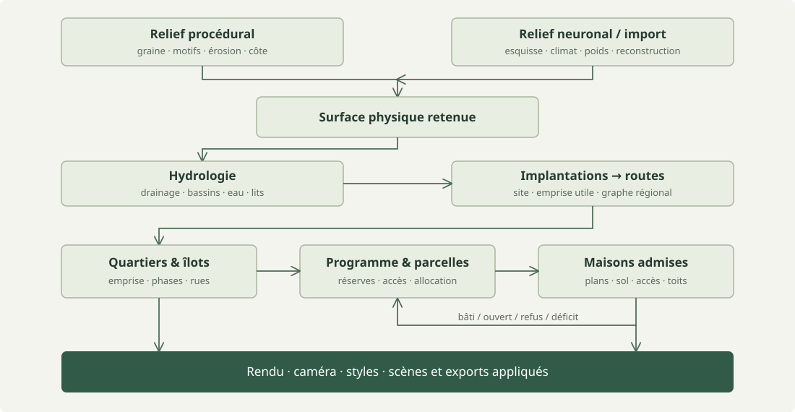
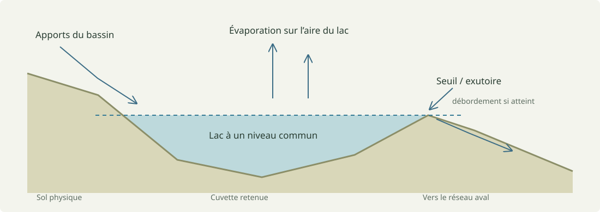
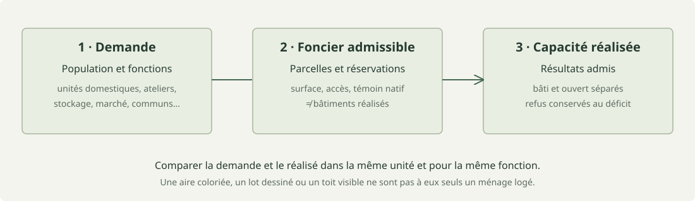
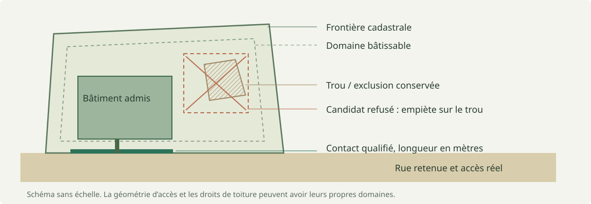

Comment se construit
Magna Urbis.
Un parcours complet, du champ d’altitude aux rues, des parcelles aux toitures. Ce que le code calcule, pourquoi il le calcule, sur quelles sources il s’appuie — et ce que ses résultats ne démontrent pas.
Prototype de cartographie préindustrielle / documentation en français / inspection du dépôt le 28.10.2026

european-organic, style Parchemin. Cette image illustre V1 ; elle ne constitue pas une mesure du moteur Rust. Recette complète dans le manifeste des figures.Une explication traçable, pas une certification.
Magna Urbis fabrique des paysages et des établissements pour la carte et le jeu de rôle. Il combine des algorithmes connus, des adaptations numériques et des heuristiques artistiques. Une rivière qui paraît plausible n’est pas une prévision hydrologique ; un plan de médina n’est pas une reconstitution archéologique ; une population demandée n’est pas une population effectivement logée.
Cette page relie les étapes entre elles. Les notes de méthode et le code restent les références détaillées. Les liens « code » pointent vers le dépôt en ligne ; leurs chemins et empreintes SHA-256, relevés dans le checkout inspecté, sont conservés dans evidence.json. Une branche en ligne peut évoluer après cette lecture. Les captures sont des fichiers du projet reproduits sans retouche ; leur ancienneté et leur portée sont déclarées.
| Repère | Signification dans cet atlas |
|---|---|
| Implémenté | Une fonction ou un chemin est présent dans le dépôt. Cela ne garantit ni toutes ses configurations ni une validation visuelle exhaustive. |
| Méthode maison | Choix local, paramètres ou assemblage original. L’algorithme et ses hypothèses sont expliqués ; aucun article n’est invoqué comme autorité artificielle. |
| Comparaison | Publication utile pour situer la méthode, sans revendiquer une réimplémentation complète. |
V1, V2 et les bancs
La chaîne TypeScript web/src/gen/pipeline.ts conserve sa génération de monde, ses cultures et son rendu. La chaîne Rust sépare le terrain retenu, les implantations, les routes et les étapes urbaines. Les interfaces de banc et les ponts TypeScript orchestrent ces calculs. Le moteur Rust de maisons possède son propre catalogue et son propre solveur ; il est désormais appelé par le placement urbain. Ce raccordement est réel, mais chaque maison peut être refusée et les grands ensembles demandent encore une validation.
Le nom « V2 » désigne aussi un style de rendu dans certains fichiers. Une option visuelle V2 n’implique donc pas, à elle seule, que la génération utilise le nouveau parcours complet. Pour une preuve, relever le moteur, le backend et l’état appliqué.
Le parcours de l’Atelier V2
L’Atelier V2 sépare deux écrans : Topographie, puis Peuplements. Ce second écran distingue implantation et routes, puis construction individuelle ou collective. Le parcours peut aussi être enchaîné en un clic. Le relief et l’hydrologie retenus sont conservés lorsque les lieux sont construits ou modifiés.
Dans le rejeu navigateur illustré ci-dessous, le calcul est explicitement CPU TypeScript. Ces captures historiques documentent le parcours classique. La version actuelle démarre sur Rust : les formulaires transmettent les réglages de terrain, modèles neuronaux, érosion, climat et hydrologie au moteur sélectionné. Le relief, les champs physiques et le réseau hydrographique natifs sont retenus ensemble ; ils ne sont plus remplacés par un nouveau drainage TypeScript. Les implantations et routes Rust réutilisent ce territoire, puis les villes avancent par étapes. Le moteur classique reste sélectionnable séparément. La largeur et les huit directions de mer sont configurables avant le premier calcul, avec une largeur Rust de 500 m à 100 km. Toujours relever le backend réellement appliqué pour chaque étape.

v2-ui-evidence, 2,4 km, relief plat, ruisseau, sans mer. Trois cours d’eau ; aucun lieu construit.
Parcours V2 : orchestration par étapes · backends réellement exécutés · rejeu navigateur du 28 octobre. Les captures ont été produites par ce rejeu, sans retouche.
Pour l’usage quotidien, les commandes et les portées d’import/export, consulter aussi le guide de l’Atelier V2. L’atlas explique les méthodes et leur preuve ; le guide décrit les opérations de l’interface.
Le raccordement urbain Rust de V2 fournit quatre étapes explicites : layout, parcels, programme et buildings, avec snapshots natifs retenus. Les rejeux séparés Rust/WASM et Rust natif ont exercé ces quatre étapes jusqu’à des maisons admises. Les captures TypeScript ci-dessus restent attribuées à leur propre parcours ; elles ne sont pas les images de ces essais Rust.
Les réglages peuvent être globaux ou propres au lieu, puis cibler un quartier, une parcelle ou une demande de maison identifiée. Le rapport expose les avertissements et refus ; une demande refusée peut être retentée avec une configuration corrigée. Ces surcharges restent soumises aux recettes et aux contraintes physiques. Un compteur de requêtes locales permet de vérifier qu’une modification de maison ne relance pas implicitement le terrain ou tout le cadastre.
Lire : pipeline V1 · placement urbain natif · style de rendu V2.
Une chaîne d’états conservés.
L’ordre logique est terrain → eau → implantations → routes → ville → programme et parcelles → bâtiments → présentation. Il existe des retours et des itérations locales : le programme réserve du foncier avant la découpe ; le bilan bâti est réconcilié après les vrais placements. Les étapes aval consomment les données appliquées, avec leurs géométries, leurs trous, leurs identités et leurs refus.

Une pente de 0,12 signifie 12 %, soit environ 6,84°. La conversion est angle = atan(pente). Une densité brute exprimée en habitants par hectare comprend les rues et espaces ouverts ; elle ne se confond pas avec la densité des seules parcelles résidentielles.
Réglages, brouillons et état appliqué
Un champ d’interface modifié peut être un brouillon. Les exports et preuves doivent identifier la configuration qui a effectivement produit la scène. Les recadrages traduisent les géométries dans leur nouveau repère ; les altitudes physiques, normales et dimensions ne sont pas multipliées par l’exagération verticale de l’affichage.
Composer deux projets : un territoire ou une recette
L’import complet conserve la scène fournie. La composition propose deux opérations de portée plus étroite. Importer un territoire adopte ses grilles physiques, sa mer, ses rivières et ses lacs sans recalculer relief ou hydrologie, tout en conservant la recette urbaine courante. Les anciens sites, routes, villes et retouches géométriques sont écartés : ils doivent être reconstruits sur ce territoire.
Importer une recette de peuplements conserve au contraire le territoire courant et importe les intentions de l’autre projet : population, cultures, implantation, morphologie et surcharges déclarées. Le relief étranger et les géométries de ses villes ne sont pas transplantés. Les réglages par clé stable font partie de la recette ; une retouche manuelle d’une ancienne empreinte bâtie n’a pas cette portée et n’est pas fusionnée.
Si les réglages du fichier sont un brouillon incohérent avec sa carte affichée, la surface conservée devient une entrée FP32 portable ; le biome appliqué et la provenance de calcul restent ceux du territoire. L’opération reconstruit le couvert naturel et les couches dépendant des villes supprimées, sans prétendre conserver l’ancienne occupation agricole. Le travail de composition est exécuté dans un worker. Le rejeu navigateur vérifie notamment l’empreinte physique conservée, la purge des anciennes géométries, le cache et la reconstruction après composition ; il ne démontre pas une validité automatique de toute recette sur tout site.
Code : portée et provenance de composition · worker de composition · cas de régression de composition.
Le générateur TypeScript distribue le hasard par sous-graines nommées (fork). Cette séparation permet de réutiliser un terrain quand seules des options urbaines changent. Elle n’implique pas que deux moteurs, deux versions ou deux backends GPU produisent toujours les mêmes bits.
Code : TerrainGenerator et surface conservée · aléatoire partagé · transferts entre bancs.
Bruits cohérents, motifs et côtes.
Un bruit cohérent varie continûment dans l’espace : deux points proches reçoivent généralement des valeurs proches. Le moteur combine plusieurs fréquences et amplitudes, puis déforme les coordonnées d’évaluation. Une écriture explicative est :
h(x, y) = forme(x, y) + Σ aₖ N(fₖ · (x + wₓ), fₖ · (y + wᵧ))N est le bruit, aₖ son amplitude à l’octave k, fₖ sa fréquence et w le déplacement du domaine. Les grandes longueurs d’onde structurent les masses ; les petites portent le détail. Le code local utilise du simplex : le bruit amélioré de Perlin [1] situe cette famille de constructions, mais n’est pas sa transcription exacte.
La taille de carte et celle du motif ont des rôles distincts. Les familles plaine, collines, vallée, montagnes, plateau, canyon, volcan ou caldeira ajoutent des structures propres. Les formes finies ont une position et un support ; le relief ouvert est évalué dans le repère régional. L’environnement côtier produit des altitudes sous et au-dessus du niveau marin. Ce traitement construit une forme de paysage ; il ne simule pas des plaques tectoniques.
Le champ source Rust utilise notamment une résolution interne de 1024². La surface conservée et les traitements locaux permettent d’échantillonner une région sans redémarrer l’érosion. Filtrer les octaves trop fines limite le repliement spectral : suréchantillonner une surface grossière n’ajoute toutefois aucune observation géologique.
Code : simplex et octaves · préparation du bruit · côtes · familles et génération.
Terrain Diffusion et la fenêtre finie.
InfiniteDiffusion [6], d’Alexander Goslin, rend l’échantillonnage de diffusion paresseux et non borné. Terrain Diffusion applique cet algorithme au terrain. Les fenêtres utilisent un bruit spatial cohérent et des recouvrements pondérés ; elles ne sont pas des tuiles générées indépendamment puis collées. Les propriétés de l’algorithme publié ne deviennent pas automatiquement celles de toute application qui en utilise les poids.
Dans Magna Urbis, le parcours documenté produit une fenêtre finie de 40 × 40 km. Le planificateur remonte depuis la zone livrée pour calculer les fenêtres nécessaires :
| Étape | Échelle nominale | Rôle local |
|---|---|---|
| Coarse | 7 680 m | Contexte régional, conditionné par une esquisse et le climat. |
| Base | 240 m | Champ latent conditionné par le coarse. |
| Decoder | 30 m | Reconstruction du détail et de l’altitude ; rééchantillonnage pour le banc. |
Le profil coarse4 → base originale en une évaluation → decoder étudiant distillé est une configuration locale, avec des variantes de backend. L’esquisse règle de grandes formes ; une petite dépression sous la maille coarse n’est pas assurée de survivre. La surface importée conserve sa provenance et n’est pas soumise une seconde fois à l’érosion et à la découpe côtière procédurales. L’hydrologie est traitée ensuite.
Modèle, échantillonneur et distillation
Le réseau, son conditionnement et la méthode qui le fait évoluer depuis le bruit sont trois objets distincts. EDM [7] organise leurs choix numériques ; EDM2 [8] étudie la maîtrise des magnitudes durant l’entraînement. Les modèles de consistance [9] peuvent apprendre une génération en peu d’évaluations. Cela ne justifie pas de convertir arbitrairement un modèle multiétape en modèle à une passe.
Le mode navigateur emploie Rust/WASM et WebGPU avec des poids externes et leur cache ; le mode Python utilise PyTorch/CUDA. Quantification et précision peuvent différer. Deux sorties visuellement proches ne prouvent pas une équivalence numérique. Une preuve de rejeu doit fixer les poids et le backend.
Les moteurs neuronaux actuels ne disposent pas d’un chemin d’inférence CPU dans V2 : ils demandent WebGPU dans le navigateur ou Python/CUDA local. Une demande neuronale avec calcul CPU est refusée explicitement ; elle n’est pas remplacée silencieusement par du bruit procédural. Le CPU reste utilisable pour le relief procédural et l’urbain Rust.
Code : planificateur · chaîne · reconstruction · entrée WebGPU · service CUDA.
Diriger, inciser, redistribuer.
L’érosion procédurale combine plusieurs opérations. Priority-Flood [2] construit un potentiel de drainage depuis les sorties en traitant les cellules par altitude croissante. Le niveau de débordement d’une cuvette indique comment l’eau pourrait sortir : il ne signifie pas que tout le sol doit être physiquement remonté jusque-là.
Le routage D∞ de Tarboton [3] évalue les facettes triangulaires autour d’une cellule et répartit l’aire contributive entre deux voisins aval. Il réduit le biais des huit directions fixes de D8. Le réseau vectoriel final a sa propre topologie : le partage d’aire utilisé pour inciser n’est pas la géométrie d’une rivière dessinée.
La famille des lois de puissance fluviale
∂h/∂t = U − K Aᵐ Sⁿ
h : altitude ; U : surrection ; A : aire contributive ; S : penteCette équation situe le modèle d’incision. Le solveur implicite de Braun et Willett [4] traite la dépendance des altitudes vers l’aval. L’implémentation locale l’adapte pour l’interactivité : contribution plafonnée, réponse atténuée aux faibles pentes, incision et corrections bornées. Le curseur d’érosion est une intensité, sans conversion établie en milliers d’années.
Le moteur complète l’incision par l’ouverture contrôlée de seuils, du remplissage de bassins, une relaxation thermique au-delà du talus et une diffusion de versant. Ces passes modifient des aspects différents du relief. Les réglages avancés exposent notamment itérations, incision, seuil de pente, remplissage, ouverture, talus, diffusion et traitements de surface. Les parcours GPU utilisent des shaders dédiés ; leur présence ne garantit pas un résultat identique bit à bit au CPU.
Code : érosion CPU, paramètres et solveur · passes GPU.
Un drainage, des bassins, puis des surfaces d’eau.
Les directions d’écoulement et les aires contributives structurent un réseau. Les zones plates demandent un classement topologique, car la seule pente ne donne pas d’aval. Les dépressions retenues deviennent des lacs ; les autres peuvent recevoir une brèche ou une correction bornée. Les diagnostics initiaux restent distingués des corrections finales.

Le bilan des lacs est simplifié et explicite
Le module local calcule une évaporation potentielle avec la température corrigée de l’altitude, puis une évapotranspiration annuelle empirique :
Tz = T − 0,0065 · max(z, 0)
L = max(60, 300 + 25 Tz + 0,05 Tz³) [mm/an]
ET = P / √(0,9 + P²/L²)
r = max(P − ET, 0,02 P, 0,5) [mm/an]Les planchers de ruissellement sont des choix du générateur, pas une loi naturelle. Au niveau d’équilibre, l’apport du bassin compense approximativement l’évaporation de la surface du lac. Si l’apport dépasse ce que le lac plein évapore, il déborde au seuil et transmet l’excès. Le module s’inspire de Fill–Spill–Merge [5] ; il ne reproduit pas toute la hiérarchie dynamique de l’article.
Du raster au graphe vectoriel
Sources, tronçons, confluences et sorties deviennent des objets reliés. Des nœuds communs maintiennent les raccords. Largeur, lit et profil d’eau sont évalués le long des axes avec des budgets de correction. Les méandres ajoutent des variations déterministes à plusieurs échelles, contraintes par le terrain ; ce n’est pas une simulation temporelle complète de migration latérale.
Un masque d’obstacle conservateur peut élargir une rivière pour la recherche de route. Il ne doit pas être pris pour sa berge dessinée ni pour sa largeur physique. Le rendu de végétation utilise les surfaces d’eau affichées pour cette raison. Cette distinction est décisive dans les rivières étroites et les recadrages.
Code : orchestration · zones plates · bilan annuel exact ci-dessus · courbes.
La constructibilité précède le nom de la ville.
Les implantations évaluent des candidats secs à partir de la pente, de l’accès à l’eau douce, du littoral, de la défense, des préférences déclarées et de la place réellement disponible. Un point favorable ne suffit pas : la population implique une emprise utile, et les emprises doivent respecter exclusions et espacements. Les rangs et scores de candidats peuvent être conservés pour inspection.
Le mode rang-taille distribue les populations selon Pᵣ ≈ P₁ / rᵠ, avec un seuil minimal et une densité de lieux sur la surface utilisable. C’est une commande de distribution démographique. Le moteur ne démontre pas l’émergence historique d’une loi de Zipf à partir d’échanges économiques.

Un site riverain n’est pas automatiquement un port navigable. Une ressource inconnue reste inconnue. Les données de site alimentent ensuite le programme et la campagne, sans inventer une économie à partir d’une couleur ou d’un nom culturel.
Code : candidats, scores, populations et rangs · contrats régionaux.
Un réseau de liaisons, puis des chemins.
Le moteur sélectionne des liaisons entre implantations sur un graphe de Delaunay, conserve une ossature couvrante et ajoute des raccourcis. Ce graphe de demande indique quels lieux relier ; il n’est pas encore le tracé physique des chemins.
La recherche de trajet minimise un coût dépendant du terrain, des pentes, des obstacles, des virages et de la réutilisation des routes existantes. L’état garde une direction d’arrivée : un virage a un coût qui dépend du mouvement précédent. Des mouvements plus variés que les huit voisins limitent les trajectoires rigides et permettent les lacets. Les intersections sont réunies ensuite dans un graphe planaire.
C(chemin) ≈ Σ [coût du sol + coût de pente + coût de virage
+ coût des obstacles − avantage de réutilisation]Cette écriture est une décomposition pédagogique, pas une copie des coefficients. Galin et al. [10] fournit la référence de la famille des plus courts chemins anisotropes. Les classes routières, seuils et franchissements de Magna Urbis sont des adaptations locales. Un coût faible ne constitue pas une étude de terrassement, de résistance d’un pont ou de trafic.
Code : réseau régional · recherche orientée · chemin TypeScript V1.
La forme d’une ville et son tissu sont séparés.
Le moteur distingue l’emprise urbaine, le mécanisme de croissance, les phases/cultures locales, puis le réseau de rues et ses îlots. Une enceinte ovale ne force pas une ville circulaire ; une emprise organique peut contenir une extension en grille. Cette séparation évite qu’un simple motif de rues détermine toute la géographie.
Budgets et croissance Méthode maison
Le budget démographique part de aire = population / densité brute, avec conversion des hectares en m². Un budget artistique peut partir d’un rayon. Le rayon n’agit pas comme un second budget dans le mode démographique. Les fondations planifiées utilisent des gabarits vectoriels calibrés par aire ; la croissance accessible et les noyaux organiques utilisent un champ d’arrivée anisotrope local borné à 192².
Le coût combine relief, pente de trajet, accès et bruit spatial. Cohésion, satellites, profondeur des branches et échelle des coupures règlent la dispersion. Une cellule traversée par la propagation n’est pas nécessairement attribuée à la ville. Les petites poches impossibles à desservir peuvent être écartées et manquer au budget. Les noyaux séparés par l’eau ne créent pas implicitement de pont.
Armature, quartiers et îlots
Les accès régionaux guident le macroplan. Les quartiers conservent leurs identités, leurs recettes et leurs phases ; les secteurs de calcul suivent l’armature plutôt qu’une coupure arbitraire à chaque frontière d’âge. Le routage vérifie les pentes le long des segments. Les largeurs sont des rubans métriques, pas uniquement un trait visible.
La desserte adaptative ajoute des accès bornés lorsqu’un îlot est trop profond pour sa recette : les corridors doivent rester dans la terre parentale, éviter eau et voisins et respecter les pentes. Cette étape appartient au plan. Refaire les parcelles conserve les rues et les îlots retenus ; elle ne doit pas réparer un déficit foncier en déplaçant silencieusement le réseau.
Les cultures regroupent des intentions de morphologie, d’accès et d’architecture. Organique européen, bastide, médina, plans chinois ou japonais, cultures communales et fantasy ne sont pas des synonymes d’une grille perturbée. Les mélanges par phase ou quartier restent des recettes procédurales. Parish et Müller [11] et Chen et al. [12] sont des repères comparatifs : le code local n’est pas présenté comme leur solveur exact.

03-norse-hamlet, 40 habitants demandés, culture barbarian-norse. Cette capture montre une armature et des découpes ; aucun ensemble de maisons n’y est discernable à cette échelle. Elle n’est pas une preuve d’occupation bâtie réussie. Provenance et recette conservées dans le manifeste.Code : emprise · macroplan · quartiers et îlots · réseau · méthode détaillée.
Demander, réserver, allouer, puis compter le réel.
Le programme reçoit la population appliquée, le rôle du lieu, les ressources connues, le contexte culturel, la période, la compatibilité architecturale et le lore. Il distingue les fonctions domestiques, mixtes, artisanales, collectives, de stockage et les espaces ouverts.
Une hypothèse locale utilise 4,5 personnes par unité domestique. Ce nombre n’est pas une constante historique. Le rôle et les déclarations modulent les besoins : un carrefour peut demander plus de marché ; un artisanat lié à une ressource peut réserver un domaine ; un port demande une navigabilité explicitement déclarée. L’eau visible seule ne l’établit pas.
Réservations et allocation Méthode maison
Avant la découpe cadastrale, le programme réserve des îlots existants desservis pour les fonctions exigeantes. La géométrie et les rues sont conservées. La sélection examine terre sèche, pente, contacts d’accès et adéquation de surface. Plusieurs îlots peuvent contribuer à une intention ouverte ; une institution isolée n’est pas multipliée artificiellement pour combler un manque.
Les parcelles voisines sont trouvées par index spatial puis par un vrai recouvrement de frontière colinéaire. La proximité des centroïdes ne crée pas une mitoyenneté. L’allocation classe les demandes selon la rareté des candidats et applique une heuristique gloutonne en deux passes. La seconde peut réaffecter un excès domestique seulement si la demande déplacée reste couverte. Ce n’est pas un optimum global.

déficit réalisé = max(0, demandé − capacité bâtie − capacité ouverte)
déficit foncier = max(0, demandé − capacité foncière)La capacité foncière domestique retient une unité par parcelle éligible dans le chemin courant à un bâtiment. Une grande parcelle ne vaut pas spontanément plusieurs ménages. Les marchés et communs contribuent à une capacité ouverte séparée. Les refus architecturaux laissent une demande réelle non satisfaite ; une occupation colorée sur la carte ne remplace pas un bâtiment accepté.
Le budget automatique de densité peut être limité par la cadence cadastrale : aire moyenne du module culturel, minimum natif et parts de phases. Les coefficients de part résidentielle (0,65) et de marge de forme (1,15) sont des hypothèses de planification du prototype, sans certification démographique. Les surcharges manuelles explicites conservent leur rôle.
Code : programme et réconciliation · correspondances explicites · hypothèses et catalogue culturel complet.
Une parcelle doit pouvoir être desservie et bâtie.
La subdivision consomme les îlots retenus, leurs trous, les réservations et la recette locale. Les familles foncières décrivent notamment façade, tissu compact, cour, domaine collectif ou terre héritée. La famille d’architecture est distincte : un domaine partagé peut porter des maisons individuelles ; un site sur pilotis demande des supports natifs.
Le contact est un intervalle mesuré
Le moteur projette les arêtes d’îlot sur les segments de rue. Il découpe des intervalles selon direction, largeur et distance, puis les réunit sur les morceaux successifs. La qualification utilise la frontière de la parcelle et celle de l’îlot. Les doublons ne doivent pas augmenter artificiellement la longueur. Une courbe discrétisée en petits segments n’est pas une collection d’accès indépendants.
Les tolérances décrites dans la note incluent une bande max(0,8 m ; 0,3 × demi-largeur), une limite de distance de 14 m et une différence angulaire de 20°. Ce sont des tolérances numériques adaptées aux rubans existants, sans prétention de norme cadastrale.

Découper et qualifier
Bandes, coupes orientées et territoires de façade en concurrence produisent des candidats. Les enveloppes témoins doivent rester contenues, y compris lorsqu’un trou est entièrement à l’intérieur du rectangle. Les jardins, résidus et réserves restent identifiés. La somme des aires ne suffit pas : l’union doit couvrir le parent attendu, sans recouvrement et avec les mêmes exclusions.
Vanegas et al. [13] situe le problème de subdivision contrainte par la façade. Les plans de façade concurrents locaux sont une partition par distance orientée ; ils ne constituent pas un squelette droit complet ni le système de persistance interactive publié.
Les dimensions d’admission viennent d’une table versionnée produite par le moteur de maisons à partir de plans minimaux résolus. Cette frontière réduit les incohérences entre découpe et architecture. Un témoin cadastral est toutefois un indice de recherche : le vrai placement doit encore vérifier sa géométrie, ses accès et le terrain.
Code : parcelles · contacts continus · table d’admission · méthode et expériences.
Un plan natif résolu, puis une admission physique.
Le moteur Rust de maisons résout une recette de son catalogue : corps, niveaux, cours, circulations, supports, toitures, matériaux et variantes. Le mapping culturel est explicite. Les noms proches ne choisissent pas un pack à l’exécution. Les modes strict, inspiré et fantasy expriment des politiques de compatibilité ; « strict » signifie conforme aux plages de la recette déclarée, pas certifié par une autorité historique.
La recherche est bornée Méthode maison
Le parcours automatique peut examiner jusqu’à trois recettes du pack et des plans cibles, intermédiaires et minimaux. Pour un plan donné, les contacts, positions et retraits sont bornés ; la note décrit jusqu’à 324 transformations par parcelle pour ce parcours. Un modèle précis choisi dans Houses conserve son propre tirage et n’est pas remplacé par ces alternatives automatiques.
Une fois le plan résolu, les candidats lui appliquent une transformation rigide. Une maison qui ne rentre pas n’est pas coupée aux limites pour cacher l’échec. Les souhaits de couverture, façade et profondeur restent bornés par la recette et la politique de dimensions. La porte peut être plus étroite que le corps : l’accès et l’enveloppe bâtie sont deux contraintes distinctes.
Le sol et le domaine ne viennent pas de l’image
Le sol transmis peut être un raster physique, interpolé bilinéairement. Son origine désigne le centre du premier échantillon. Un plan local z = z₀ + gₓ(x−x₀) + gᵧ(y−y₀) reste une approximation de compatibilité lorsqu’il est utilisé. La texture de terrain affichée ne sert pas de fondation. Un domaine distinct peut autoriser des débords de toiture ; sinon les toits restent dans le cadastre.
Volumes et enrichissement partagent le même plan
Le chemin léger produit des corps, niveaux, supports, squelette d’accès et facettes natives de toiture. Il omet les pièces, les opérations détaillées sur murs/ouvertures et l’ornement. L’enrichissement détaillé réutilise le plan résolu, au lieu de tirer une seconde maison. La compaction des sommets et indices est sans perte de facettes ; elle ne doit pas être confondue avec une simplification géométrique.
Les contraintes d’accès extérieur et les surfaces physiques doivent rester cohérentes entre volume et détail. Le nombre de maisons acceptées, les refus et la capacité construite sont comptés après admission, puis transmis au programme. Une collection de recettes ou un succès dans House Bench n’établit pas que chaque lot d’une ville accepte une maison.
Modifier une maison dans V2
Une surcharge HouseConfig est attachée à l’identité stable de la demande native, avec héritage des réglages du lieu pour les valeurs absentes. Un refus reste visible et retentable. Les rejeux actuels démontrent une invalidation locale, une seule requête de maison dans leur cas contrôlé et la conservation des autres maisons. La conservation d’un snapshot et la reconstruction depuis une recette modifiée sont deux contrats distincts : le rejeu exact de toutes les surcharges, sur tous les backends et toutes les successions d’édition, n’est pas établi par ces seuls essais. Le voisinage retenu et la scène de référence utilisée avant application des surcharges doivent faire partie de cette vérification.
Pour stabiliser le rejeu des éditions, l’adaptateur conserve les originaux des seules maisons déjà touchées. Il restaure ainsi une scène de référence sans dupliquer toute la scène, puis réapplique l’ensemble courant des surcharges dans l’ordre stable des sites. Les constructions voisines conservées deviennent des occupations contraignantes pour les demandes suivantes. Les paramètres plus locaux prennent la priorité ; les dimensions et étages restent dans les bornes de la source. Ce mécanisme de rejeu est une adaptation locale du projet, distincte d’une preuve générale d’indépendance à l’ordre de toutes les opérations possibles.
Les audits finaux WASM et natif exercent un cas précis : deux étages globaux, trois pour le lieu, puis deux pour la maison. Le réglage de maison prend bien la priorité ; une demande de quatre étages incompatible avec la source est refusée. Le champ recipeReproducesInteractiveEdits atteste le rejeu depuis la recette des éditions interactives de ce cas, et stageWarningsScoped contrôle que les refus d’un produit aval ne sont pas attribués à un arrêt antérieur. Cette réussite ciblée ne généralise pas à tous les catalogues et toutes les séquences d’édition.
Code : intentions neutres · placement · résolution · recettes · contrat détaillé et limites.
Occupation du sol et couverture végétale.
La campagne conserve un chemin TypeScript, adapté aux données de site Rust. Géographie, culture et contexte appliqué guident les occupations. Les profils explicitement agricoles peuvent demander des fermes sur de vrais accès ruraux, hors de l’emprise urbaine retenue. Les réservations du programme restent protégées ; une réserve de croissance ouverte n’a pas le même statut qu’une institution réservée.
Cette chaîne ne calcule pas un rendement agricole, une ration alimentaire ni une capacité d’importation. Une ressource déclarée peut avoir un effet identifié dans le programme ; elle n’invente pas une filière de production complète dans la campagne.
Canopée et arbres visibles
La végétation de Render3D utilise un champ de contrôle en coordonnées monde : couverture, hauteur potentielle, part de conifères et tonalité/perturbation. Le champ tient compte du climat et de la topographie. La densité est notamment transformée par cᴰ = 1 − (1 − c)ᴰ : c’est une politique de couverture, sans mesure de surface foliaire.
Les galeries riveraines ont une enveloppe dédiée liée aux berges visibles. Les centres d’arbres évitent l’eau affichée ; les couronnes peuvent surplomber une rive. Utiliser le masque élargi de routage produirait des clairières artificielles en escalier. À distance, la couverture non résolue devient une moyenne de matériau ; de près, les couronnes deviennent distinguables. Les transitions d’échelle doivent limiter les sauts de luminance sans modifier le terrain.

canopy-v9, vue de dessus 640 m, viewer local Godot. Ce chemin de surface est distinct de Render3D web ; ce n’est ni une photographie écologique ni une capture du dernier style V2. Le dossier d’origine contient son manifeste et ses rapports.Biomes et saisons restent des approximations
Température corrigée d’altitude, pluie et indices de position topographique servent de proxys. La saisonnalité, la neige annuelle et les matériaux ont leurs propres règles documentées. Les coefficients de perturbation de V2 sont des politiques visuelles bornées. Ils ne décrivent pas une succession écologique, un âge de peuplement ou un stock de neige observé.
Code : campagne · adaptateur d’occupation · champ de forêt · équations et échelles · preuve de la figure.
La présentation est un consommateur du monde.
Le rendu transforme les données retenues en relief ombré, matériaux, eau, végétation, traits, textes et géométrie bâtie. Parchemin, Atlas, vues de diagnostic, Render3D et V2 ne constituent pas des modèles physiques différents. Certains chemins utilisent des adaptateurs et un rendu temporaires ; l’apparence ne garantit pas leur équivalence.


LOD, matériaux et géométrie
Le niveau de détail d’affichage peut remplacer un très petit toit par une forme grossière et éliminer les objets hors caméra. Cela économise le dessin ; le plan natif conservé reste l’autorité architecturale. Le nombre de pixels d’une image n’est ni la résolution du drainage ni celle du champ d’altitude.
Les matériaux et la canopée ont leurs propres échelles spatiales. Une texture fine ne transforme pas un DEM de plusieurs dizaines de mètres en mesure topographique centimétrique. Une surface 3D destinée au dessin n’est pas le sol de fondation, et l’exagération verticale de caméra ne doit pas contaminer les dimensions physiques.
Dans le raccordement V2 urbain Rust inspecté, le snapshot conserve la scène native tandis que sa projection vers UrbanLayer classe notamment les toits en catégories d’affichage (plat, dôme, conique, croupe, pagode ou pignon). Cette projection ne constitue pas une restitution exacte de chaque facette native dans la carte. L’affirmation « géométrie native conservée » et l’affirmation « géométrie native intégralement dessinée » demandent deux preuves différentes.
Cartographie fantasy et illustration
Les pinceaux peuvent être guidés par les polygones d’occupation et leurs trous, avec candidats attachés au monde et hachages déterministes. Le classement utilise un index spatial puis un test exact de point dans le polygone. Les ancres sont contraintes ; les bords d’un motif peint peuvent dépasser. L’absence d’occupation ne doit pas inventer une forêt.
Le module d’illustration transforme une capture avec un modèle d’image local ou externe et conserve une recette. Cette image est une interprétation, distincte du monde procédural et de ses métriques. Elle ne doit pas servir de preuve d’une toiture, d’une route ou d’une maison qui n’existe pas dans la scène retenue.
Exporter et rejouer
SVG/PNG décrivent une vue ou des couches visibles ; JSON, décors et snapshots peuvent conserver la scène et les réglages appliqués. Le format et le parcours déterminent ce qui est réellement réimportable. Les URL de paramètres ne remplacent pas nécessairement un raster importé, une scène appliquée ou les poids neuronaux. Pour archiver une preuve, garder le contenu, ses empreintes et la recette, pas seulement une URL.
Lire : rendu urbain natif · sol, maillage et matériaux · pinceaux et occupation.
Raccordement V2 : snapshots urbains Rust et projection de présentation.
Le backend est une partie de la recette.
| Chemin | Où s’exécute-t-il ? | Portée réelle |
|---|---|---|
| TypeScript | CPU navigateur, workers lorsque disponibles. | Chaîne de référence et adaptateurs ; aucune compilation Rust requise pour le développement V1. |
| Rust → WASM | CPU navigateur. | Cœur compilé, exposé par des ponts numériques et des workers. WASM n’active pas le GPU automatiquement. |
| Compute WebGPU | GPU navigateur, shaders WGSL. | Passes sélectionnées du terrain et du drainage ; disponibilité et limites de l’adaptateur à vérifier. |
| Neuronal navigateur | Rust/WASM + WebGPU, poids externes. | Inférence dédiée ; allocations, transferts et précision font partie du coût. |
| Service natif local | Rust sur la machine, avec API de calcul. | Opérations urbaines/maisons et autres capacités déclarées par le service. Consulter les capacités réelles, sans supposer tous les endpoints. |
| Neuronal Python | Service local PyTorch/CUDA. | Chemin séparé, avec modèles et mémoire GPU propres ; aucune équivalence bit à bit promise avec le navigateur. |
| Desktop | Application locale et services associés selon configuration. | Une enveloppe desktop ne change pas à elle seule les méthodes, la précision ou les limites du cœur. |
Le cœur Rust ignore le navigateur et le renderer ; les crates WASM exposent ses fonctions ; les bridges et interfaces transportent leurs résultats. Les shaders procéduraux ne sont pas des réseaux neuronaux. CPU et GPU peuvent chacun accélérer un sous-problème tout en laissant un autre étage dominant.
Chemins réellement exercés dans V2
Le rapport de plateforme du 28 octobre a obtenu des hauteurs finies avec Rust/WASM CPU, le relief procédural WebGPU, Rust natif, le neuronal Python/CUDA et le neuronal WASM/WebGPU. Il conserve le backend effectivement annoncé, la provenance du calcul, les profils de modèles et leurs identités. Ce sont des contrôles fonctionnels sur les cas du script, sans garantie de performances multi-machines ni d’équivalence numérique entre ces chemins.
Le contrôle de démarrage desktop a observé l’application « Magna Urbis V2 » et son service enfant Rust natif sur un port loopback libre. L’enveloppe Tauri réutilise le rendu WebView ; les poids et Python/CUDA restent des dépendances externes optionnelles. Les installateurs se construisent pour leur système cible. Ce contrôle Windows ne certifie pas l’installation Linux, tous les pilotes GPU ni le fonctionnement neuronal sans ces dépendances.
Code : démarrage V2 et cycle de vie du service enfant · ressources et packaging V2 · configuration desktop V2 · contrôle des backends exécutés.
Mesurer un parcours complet
latence ressentie = génération + sérialisation/transfert + adaptation
+ préparation de scène + premier affichage
+ éventuels chargements / enrichissementsUn temps natif court ne suffit pas si le transfert ou la préparation du navigateur bloque. Distinguer cache froid/chaud, calcul nécessaire avant l’image et travail en arrière-plan. Le chargement de poids, la compilation des shaders et la résolution choisie changent fortement le résultat d’une mesure. L’absence de blocage sur une petite ville n’extrapole pas à une métropole.
Code : service local · desktop · commandes disponibles. Standards : WebAssembly · WGSL.
Une preuve doit nommer ce qu’elle mesure.
Cette livraison vérifie la page documentaire, ses liens internes, ses références locales, ses images et sa mise en page. Elle ne relance pas l’ensemble des campagnes natives du projet. Les mesures ci-dessous sont des résultats historiques de notes de méthode, clairement bornés à leurs cas ; elles ne sont pas présentées comme de nouveaux benchmarks.
Rejeux fonctionnels V2 du 28 octobre 2026
| Preuve conservée | Ce qu’elle exerce | Ce qu’elle ne démontre pas |
|---|---|---|
| Urbain Rust/WASM | Les quatre étapes strictes, maisons natives, invalidation d’une maison et conservation des autres dans le cas contrôlé. | Qualité historique, densité universelle ou rejeu exact de toute recette éditée. |
| Urbain Rust natif | Même famille d’étapes via le service local, avec backend déclaré et résultats distincts. | Identité bit à bit avec WASM ; les rapports produisent des nombres de parcelles et de maisons différents. |
| Composition de projets | Territoire physique conservé, recette de portée distincte, nettoyage, cache et reconstruction réelle par l’interface. | Transport sûr d’anciennes géométries sur un autre site ; elles sont explicitement purgées. |
| Plateformes de relief | Calcul réel sur les cinq chemins et profils retenus par le rapport, avec valeurs finies. | Inférence neuronale CPU, équivalence de modèles ou benchmark isolé. |
| Démarrage desktop Windows | Application ouverte et moteur Rust enfant déclaré sur loopback. | Validation de tous les installateurs, de tous les OS ou des modèles externes. |
Ces rapports ont été produits par les contrôles d’intégration du projet puis copiés dans la documentation. Le manifeste des rapports conserve chemin source, date de collecte et SHA-256. Les temps inscrits ne sont pas des garanties de latence : le poste de développement et ses caches sont partagés.
Une recette de reproduction minimale
- Fixer le commit et les changements locaux, les versions des catalogues, le schéma et les poids avec SHA-256.
- Conserver les graines par étape, tous les réglages appliqués, le backend, la précision, les dimensions et le raster importé éventuel.
- Décrire la machine, le navigateur, le GPU, les caches et le premier chargement ; chronométrer les étapes séparément.
- Archiver le snapshot ou le décor réellement rendu, la caméra, les dimensions du viewport et la capture brute.
- Rapporter demande, foncier admissible, placements acceptés, refus, capacité bâtie/ouverte et déficit, avec les unités propres à chaque fonction.
- Définir le critère attendu avant de conclure : invariant géométrique, rejeu déterministe, qualité visuelle ou performance. Aucun de ces critères ne remplace tous les autres.
Deux constats à conserver, même s’ils sont inconfortables
La note de parcelles rapporte une première médina retenue de 74 îlots et 72 rues. Une correction de source a fait passer les maisons acceptées de 4 à 148, mais la couverture bâtie du cœur restait de 15,9 %. C’est une amélioration de cohérence de recette ; cela ne prouve pas un souk dense réussi.
Un premier cas natif complet de 50 000 habitants a produit 6 188 parcelles et 5 336 emplacements domestiques indicatifs pour 11 111 unités demandées. Ce désaccord a motivé un recalibrage du budget automatique. Une sonde d’un million d’habitants a dépassé 240 s et a été arrêtée : aucun résultat de performance métropolitaine n’est revendiqué. Les chiffres décrivent des essais antérieurs à des corrections ultérieures, sur la machine de leur revue.
Commandes utiles, à exécuter dans leur contexte
# Depuis la racine du dépôt : documentation seule
node docs/scientific/check.mjs
node docs/scientific/build.mjs
# Depuis web/ : application et tests ciblés (dépendances requises)
npm ci
npm run dev
npm run dev:terrain
npm run prepare:v2
npm run dev:v2
npx vitest run --project fast tests/urban.snapshot.test.ts tests/urban.landuse.test.ts
# Depuis rust/ : exemples de familles de tests natives
cargo test -p magna-urbis-core --lib urban::programme
cargo test -p magna-urbis-core --lib urban::footprintLes commandes Rust requièrent le toolchain et les dépendances du dépôt. Les scripts natifs de rejeu requièrent une compilation actuelle de l’exécutable : un ancien binaire ne mesure pas un changement de source récent. Les répertoires web/out/ sont souvent ignorés ; un chemin mentionné dans une note peut manquer dans un autre checkout.
Quels invariants tester à chaque étage ?
| Étage | Contrôles significatifs |
|---|---|
| Terrain | Valeurs finies, unités, support et continuité ; conservation lors d’un changement de caméra. |
| Eau | Absence de boucle, niveaux cohérents, raccords de confluence, corrections dans leur budget. |
| Réseaux | Connexions, pentes, obstacles, franchissements autorisés et intersections explicites. |
| Foncier | Contenance, trous, union/couverture, non-recouvrement, accès réels, invariance des rues lors du recalcul. |
| Maisons | Recette et période admises, plan/volume/détail cohérents, toiture et accès contenus, sol physique. |
| Programme | Unités cohérentes, refus non consommés, ouvert séparé du bâti, déficit réel non masqué. |
| Image | Scène réellement appliquée, caméra et échelle connues, absence de couche manquante ; contrôle visuel explicite. |
Origine des mesures : journal méthodologique des parcelles. Protocole natif : rejeu de l’API urbaine.
Ce qui reste à établir.
| Domaine | Limite actuelle | Preuve nécessaire pour aller plus loin |
|---|---|---|
| Géomorphologie | Intensités artistiques et corrections bornées ; absence de calibration géologique globale. | Bilans, unités temporelles, cas de référence et sensibilité documentée. |
| Hydrologie | Bilan annuel simplifié ; pas de prévision de crue, de marée ou de navigation. | Données temporelles et validation physique dédiées. |
| Histoire et culture | Catalogues et emprunts déclarés ; recettes paramétriques, pas reconstruction universelle. | Sources contextualisées par époque/site, confrontation à des plans réels et revue spécialisée. |
| Démographie | Hypothèses domestiques et densités indicatives ; foncier et bâti peuvent manquer. | Comptage des bâtiments admis, occupation explicite et déficit publié. |
| Architecture | Recherche de placement bornée ; un refus peut être un échec de recherche ou une incompatibilité réelle. | Cas minimaux, diagnostic de refus, comparaison à une recherche plus complète. |
| Écologie et neige | Proxys climatiques et politiques de couverture ; détails visuels non observés. | Calibration distincte, variabilité saisonnière et corpus indépendant. |
| Grande échelle | Coûts CPU, transferts, mémoire et rendu non démontrés pour toutes les populations. | Campagnes end to end reproductibles, caches froids/chauds et cas en échec inclus. |
| Portabilité | Backend et précision influencent les sorties ; support GPU variable. | Rejeux multi-machines, tolérances définies et repli réellement exercé. |
| Documentation | Instantané d’un dépôt actif ; certaines captures anciennes ont une provenance incomplète. | Révision des empreintes, nouvelles recettes de capture, liens et affirmations remis à jour ensemble. |
Un test géométrique réussi ne certifie pas la qualité urbaine. Une capture agréable ne certifie pas la capacité d’hébergement. Une mesure native ne certifie pas la fluidité de l’application. La valeur du projet repose sur la possibilité de suivre ces distinctions jusqu’au code et aux artefacts.
Quelques mots, une seule définition locale.
- Surface retenue
- Altitudes et corrections conservées, réutilisées par les étapes et les vues suivantes.
- DEM / raster d’altitude
- Échantillons d’altitude sur une grille ; leur interpolation ne crée pas une nouvelle donnée observée.
- Aire contributive
- Surface amont dont les écoulements routés contribuent à une cellule ou un tronçon.
- Potentiel de drainage
- Niveau et ordre nécessaires à un routage ; distincts du sol physiquement corrigé.
- Anisotrope
- Dont le coût ou la réponse dépend de la direction.
- Emprise / footprint urbain
- Terre attribuée à l’établissement ; distincte du motif de rues et des empreintes de bâtiments.
- Îlot
- Domaine de terre retenu par le plan et sa desserte, avant la subdivision cadastrale.
- Cadastre / domaine bâtissable
- Propriété retenue / sous-domaine où une construction est admise. Les trous et réserves restent des exclusions.
- Contact de façade
- Intervalle de frontière réellement relié à un segment d’accès autorisé, mesuré en mètres.
- Témoin natif d’admission
- Enveloppe issue d’un plan minimal résolu, utile pour qualifier du foncier ; le placement final garde son autorité.
- Programme
- Demandes fonctionnelles, réservations et allocation, puis bilan réel après production.
- LayoutPlan
- Plan architectural natif résolu et retenu, partagé par la volumétrie et l’enrichissement détaillé.
- LOD
- Niveau de détail de présentation. Il ne modifie pas à lui seul la scène physique retenue.
- Backend
- Chemin d’exécution et matériel du calcul ; à conserver avec la recette.
Bibliographie commentée et filiations.
Références vérifiées en ligne le 28 octobre 2026, sur les pages des auteurs, éditeurs ou projets. La contribution locale est précisée pour ne pas confondre filiation, adaptation et validation. Les articles ne sont pas copiés dans ce site.
- Perlin, K. (2002). Improving Noise.
Contexte des bruits cohérents de gradient. Le projet utilise du simplex 2D ; cet article ne décrit pas exactement ce code.
- Barnes, R., Lehman, C. & Mulla, D. (2014). Priority-Flood: An Optimal Depression-Filling and Watershed-Labeling Algorithm for Digital Elevation Models. Computers & Geosciences 62, 117–127. DOI : 10.1016/j.cageo.2013.04.024.
Référence et dépôt des auteurs pour les dépressions et bassins ; adaptation locale dans l’érosion et le drainage.
- Tarboton, D. G. (1997). A New Method for the Determination of Flow Directions and Upslope Areas in Grid Digital Elevation Models. Water Resources Research 33(2), 309–319.
Direction sur facettes et partage d’aire D∞ ; distinct du graphe vectoriel final.
- Braun, J. & Willett, S. D. (2013). A Very Efficient O(n), Implicit and Parallel Method to Solve the Stream Power Equation Governing Fluvial Incision and Landscape Evolution. Geomorphology 180–181, 170–179. DOI : 10.1016/j.geomorph.2012.10.008.
Famille du solveur implicite d’incision. Les bornes et paramètres interactifs de Magna Urbis restent locaux. Métadonnées vérifiées dans le dépôt institutionnel GFZ de l’auteur ; la page éditeur n’était pas accessible au lecteur automatique lors de cette revue.
- Barnes, R., Callaghan, K. L. & Wickert, A. D. (2021). Computing Water Flow through Complex Landscapes — Part 3: Fill–Spill–Merge. Earth Surface Dynamics 9, 105–121.
Remplissage, débordement et fusion de dépressions. Le module local emploie un bilan à l’équilibre simplifié, pas toute la dynamique publiée.
- Goslin, A. (2025, révision 2026). InfiniteDiffusion: Bridging Learned Fidelity and Procedural Utility for Open-World Terrain Generation. arXiv:2512.08309v4, 3 mai 2026.
Algorithme paresseux non borné et application Terrain Diffusion. Magna Urbis en calcule une fenêtre finie avec son propre planificateur.
- Karras, T., Aittala, M., Aila, T. & Laine, S. (2022). Elucidating the Design Space of Diffusion-Based Generative Models.
EDM : décomposition des choix de modèle, préconditionnement, entraînement et échantillonnage.
- Karras, T. et al. (2024). Analyzing and Improving the Training Dynamics of Diffusion Models.
EDM2 : maîtrise des magnitudes ; contexte de l’architecture des réseaux, pas preuve de qualité urbaine.
- Song, Y., Dhariwal, P., Chen, M. & Sutskever, I. (2023). Consistency Models. PMLR 202, 32211–32252.
Génération en une ou quelques évaluations, entraînée directement ou distillée.
- Galin, E., Peytavie, A., Maréchal, N. & Guérin, E. (2010). Procedural Generation of Roads. Computer Graphics Forum 29(2), 429–438. DOI : 10.1111/j.1467-8659.2009.01612.x.
Famille des plus courts chemins anisotropes ; le projet possède ses propres coûts, classes et limites.
- Parish, Y. I. H. & Müller, P. (2001). Procedural Modeling of Cities. SIGGRAPH, 301–308.
Référence comparative : objectifs globaux et contraintes locales de croissance urbaine par L-systems.
- Chen, G., Esch, G., Wonka, P., Müller, P. & Zhang, E. (2008). Interactive Procedural Street Modeling. ACM Transactions on Graphics 27(3), article 103.
Référence comparative : champs de tenseurs et édition des graphes de rues. Aucune implémentation complète du solveur n’est revendiquée.
- Vanegas, C. A., Kelly, T., Weber, B., Halatsch, J., Aliaga, D. G. & Müller, P. (2012). Procedural Generation of Parcels in Urban Modeling. Computer Graphics Forum 31(2pt3), 681–690.
Référence de la subdivision urbaine contrainte ; les coupes et territoires de façade locaux sont une adaptation partielle.
Projets, héritage et sources architecturales
- TownGeneratorOS — Oleg Dolya / Watabou : filiation initiale explicitement reconnue par Magna Urbis. Le premier port Python a été retiré ; les implémentations actuelles poursuivent l’exploration.
- Terrain Diffusion — code de l’auteur : modèles et infrastructure de terrain appris.
- Neural Earth : projet planétaire associé ; intégration urbaine complète encore à réaliser.
- World Orogen : contexte planétaire de Neural Earth, distinct de l’érosion locale de Magna Urbis.
Pour les traditions et périodes architecturales, consulter les sources attachées aux recettes et les revues du catalogue ; une bibliographie générale de géométrie ne les remplace pas. Le dépôt contient notamment des notes sourcées pour l’architecture domestique romaine compacte et l’architecture domestique javanaise. La couverture de ces sources est inégale ; les cultures fantasy déclarent leurs emprunts.
Inventaires internes : styles architecturaux · établissements · inventaire architectural et empreintes.
Une section par étape de génération.
Chaque étape listée dans l’interface V2 a ici une section, ouverte par le « ? » à côté de sa ligne. Une section dit ce que l’étape calcule, la méthode utilisée dans le code, ses entrées et sorties, ses réglages et leur effet, quand elle est disponible, ce qu’elle coûte et où lire plus. Les identifiants d’étape sont stables et listés dans le contrat de registre des étapes.
La chaîne
Le relief provient d’exactement une des trois sources, puis traverse les opérateurs postérieurs communs. Eau et couverture naturelle, établissements et ville lisent la surface conservée. Les étapes d’affichage ne font que consommer. Les étapes facultatives se désactivent dans l’interface ; une étape obligatoire a une case verrouillée.
Index des étapes
- Région
- Source : procédurale, neuronale, carte importée ou de bibliothèque
- Climat de départ
- Masque personnalisé (zones, pinceaux, import/export)
- Grilles et tampons
- Bruit initial et surrection
- Formation des côtes
- Évolution régionale (surrection, drainage, incision, thermique, diffusion)
- Relaxation régionale finale
- Reconstruction (bicubique / B-spline, déformation du domaine)
- Calibrage d’amplitude (p99)
- Détail en crêtes (ridged)
- Érosion de surface
- Normalisation du niveau de référence (p1)
- Détail Phasor
- Diffusion neuronale grossière
- Diffusion neuronale de base
- Décodeur neuronal / amplification
- Ajustement de la carte d’altitude (rééchantillonnage, échelle verticale, niveau, recadrage)
- Raffinement fractal
- Conditionnement fluvial postérieur
- Transport éolien
- Finition côtière
- Hydrologie : dépressions, bilan hydrique des lacs, graphe de drainage, rivières, lits
- Couvert naturel (forêt)
- Peuplements
- Villes
- Carte
Relief
L’étape de relief produit un champ d’altitude signé en mètres (au-dessus du niveau de la mer), conservé à une résolution physique fixe. Trois familles de sources l’alimentent ; toutes les étapes suivantes lisent uniquement ce champ conservé, jamais le générateur qui l’a produit. Les opérateurs postérieurs de fin de chaîne s’appliquent à toutes les sources.
Source : procédurale, neuronale, carte importée ou de bibliothèque relief-source Toujours obligatoire
Quoi et pourquoi. Choisit l’origine des altitudes et fixe le cadre de tout le calcul : graine, largeur carrée de la carte en mètres, échelle des formes et backend de calcul. Tout l’aval est déterministe à recette égale ; la source est donc la première ligne de la recette et du lien de partage.
Algorithme. Procédural : bruit cohérent puis simulation bornée d’évolution du paysage (étapes ci-dessous). Neuronal : modèle de diffusion en trois étages (grossier, base, décodeur) échantillonné sur une fenêtre finie. Carte d’altitude importée ou de bibliothèque : raster rééchantillonné dans le cadre. Les trois chemins aboutissent à la même surface conservée.
Entrées et sorties. Entrées : type de source, graine, largeur (m), échelle des formes (m), backend, fichier éventuel. Sortie : la recette qui sélectionne les étapes ci-dessous à exécuter.
Réglages. Menu de source (Procédural avec préréglage Classique ou Compact, Neuronal, Carte d’altitude, Bibliothèque), graine, largeurs préréglées (5, 10, 25, 50 km), échelle des formes, famille de relief, climat, dose d’érosion globale, backend. L’ancien nom procedural-phasor ne subsiste que comme alias de recette sauvegardée.
Coût et backends. Le procédural s’exécute en CPU (Rust compilé en WebAssembly, ou service natif), en WebGPU, ou en hybride (bruit GPU, érosion CPU). Le neuronal s’exécute dans le navigateur (Rust/WASM + WebGPU) ou dans le service local Python/CUDA. Une carte d’altitude n’exige pas de calcul lourd. Le backend fait partie de la recette : on ne promet pas d’égalité binaire entre solveurs CPU et GPU.
Note de méthode : procedural-generation-stages.md
Climat de départ relief-climate
Le climat est une condition initiale : température, saisonnalité et pluie sont transmis au neuronal avant la diffusion, puis utilisés par l’érosion climatique, les bilans hydriques et la végétation. Le préréglage est accessible par une ligne d’icônes dans le cadre supérieur de Région ; les valeurs détaillées sont ici. Le biome régional reste un réglage distinct. Désactiver la forêt ne désactive pas le climat.
Masque personnalisé (zones, pinceaux, import/export) relief-mask Source procédurale désactivable
Quoi et pourquoi. Permet à l’auteur d’imposer l’emplacement des montagnes, plaines, vallées ou côtes. C’est une entrée interactive, pas un noyau GPU : les zones peintes remplacent la disposition automatique du relief, le reste de la chaîne ne change pas.
Algorithme. Une surcouche transparente sur la carte principale enregistre des étiquettes de zones avec rayon de pinceau et dégradé, avec historique. Quand le masque est actif, le générateur Rust de zones groupées évalue chaque zone peinte avec le préréglage choisi ; le sol non peint reste transparent dans l’éditeur. Les cartes de zones et d’altitude s’importent et s’exportent.
Entrées et sorties. Entrées : traits de pinceau, carte de zones ou d’altitude importée. Sortie : un champ de zones servant de disposition structurelle à l’étape suivante.
Réglages. Pinceaux de zones, gomme, taille, dégradé, historique, import/export ; la case de l’étape bascule entre disposition automatique et manuelle en conservant les zones peintes.
Coût et backends. Peu coûteux : une édition de raster et une génération de zones. Le terrain à zones peintes utilise le générateur de zones d’origine, pas l’ordonnanceur CPU/GPU automatique.
Note de méthode : procedural-generation-stages.md
Grilles et tampons relief-grids Source procédurale obligatoire
Quoi et pourquoi. Alloue les deux résolutions de la simulation : une grille régionale grossière où le paysage évolue, et la surface conservée où l’on ajoute le détail. La résolution est un budget : des grilles plus fines résolvent des vallées plus étroites mais coûtent plus par cycle d’évolution.
Algorithme. Le champ physique conservé fait toujours 1024 par 1024 : une carte de 5 km a des échantillons de 4,88 m, une carte de 50 km de 48,83 m. Le préréglage compact simule un domaine élargi à 1,44 fois la largeur de la carte ; son côté vise une largeur de cellule (100, 65 ou 40 m pour rapide, équilibré, détaillé), arrondie au multiple de 16 supérieur et bornée à 64–384 cellules. Surrection et incision par cycle sont remises à l’échelle pour que la dose cumulée reste comparable.
Entrées et sorties. Entrées : largeur, échelle des formes, qualité. Sorties : dimensions régionale et de surface, tampons de travail (détruits après chaque exécution ; les pipelines GPU compilés restent en cache).
Réglages. Qualité compacte (Rapide 8 cycles, Équilibré 12, Détaillé 20), surcharges explicites des grilles dans le bloc procédural de la recette.
Coût et backends. Élargir la carte n’augmente pas la résolution de sortie : ce n’est pas un terrain au mètre sur 50 km. Aux grandes étendues, le plafond de 384 cellules rend la cellule régionale plus large que la cible.
Note de méthode : compact-terrain-phasor.md
Bruit initial et surrection relief-noise Source procédurale obligatoire
Quoi et pourquoi. Construit la surface de départ et le forçage tectonique U que le cycle d’érosion va sculpter. Montagnes, collines, vallées, canyons, plaines et hautes montagnes diffèrent par leur motif de surrection et leur recette de bruit. C’est une forme de paysage, pas une simulation de tectonique des plaques.
Algorithme. Octaves de bruit simplex cohérent avec déformation du domaine, h = forme + Σ a_k N(f_k (x + w)), où a_k et f_k sont amplitude et fréquence de l’octave k [1]. Les régimes montagneux reçoivent un poids régional continu (sans bande plafonnée) qui multiplie la surrection le long d’un squelette de crêtes : surrection *= 1 + crête * poids * (0,24 + 1,8 arête² − 1). Les crêtes existant avant l’érosion, elles entrent dans le drainage au lieu d’être masquées par une texture tardive.
Entrées et sorties. Entrées : graine, famille de relief, mélange montagneux, échelle du bruit, force des crêtes. Sorties : altitudes régionales initiales et champ de surrection.
Réglages. Échelle du bruit régional, force des crêtes structurelles, famille de relief, mélange montagneux.
Coût et backends. Une passe par cellule ; GPU ou CPU. La référence CPU garde le générateur régional Rust d’origine : les deux formes concordent statistiquement, pas bit à bit.
Références. Bruit : Perlin [1].
Note de méthode : compact-terrain-phasor.md
Évolution régionale (surrection, drainage, incision, thermique, diffusion) relief-regional Source procédurale obligatoire
Quoi et pourquoi. Laisse rivières et pentes organiser la surface : la surrection soulève le sol, l’eau s’écoule selon la plus forte pente et creuse des vallées, les versants s’éboulent, la diffusion adoucit le reste. Après quelques cycles, le bruit aléatoire est devenu un drainage connecté avec crêtes, vallées et cônes.
Algorithme. Chaque cycle est une suite dépendante. (1) Surrection. (2) Drainage des bassins : Priority-Flood [2] inonde depuis les sorties par altitude croissante et donne à chaque cellule un potentiel de drainage ; les seuils des bassins fermés sont creusés d’une fraction (0,1) de leur profondeur par pas pendant que les bassins se comblent de sédiments (facteur 3), si bien que les plaines survivent et drainent au lieu de rester fermées. (3) Accumulation : l’écoulement se répartit entre deux voisins aval sur des facettes triangulaires (D∞ [3]), ce qui réduit le biais des huit directions. (4) Incision implicite en loi de puissance fluviale, dh/dt = U − K Aᵐ Sⁿ, résolue de l’amont vers l’aval à la manière de Braun et Willett [4], avec contribution plafonnée et réponse atténuée aux faibles pentes. (5) Relaxation thermique : la matière au-delà de l’angle de talus glisse. (6) Diffusion de versant. La convergence du graphe est vérifiée et rejouée, pas supposée après un nombre fixe de relaxations.
Entrées et sorties. Entrées : altitudes initiales et surrection. Sorties : altitudes régionales évoluées, aire drainée et directions d’écoulement.
Réglages. Nombre de cycles, multiplicateur de surrection, incision, pente de seuil, remplissage, creusement des seuils, talus, taux thermique, diffusion ; le préréglage de climat module incision hydraulique et taux thermiques (ex. tropical ×1,8 d’incision, aride ×0,35). Relaxation thermique et diffusion se désactivent séparément ; drainage et incision ne se séparent pas, car l’incision lit les données d’écoulement.
Coût et backends. Domine le coût procédural ; il croît comme cycles × cellules régionales. Des noyaux GPU (WGSL) et un solveur CPU (priority flood) existent, leurs topologies peuvent donc différer. La dose d’érosion est une intensité, pas une conversion en années ; la masse sédimentaire n’est pas conservée globalement.
Références. Voir aussi : Howard 1994 (incision limitée par le détachement) ; Musgrave, Kolb et Mace 1989 (érosion thermique et hydraulique de terrains). Voir le chapitre 04.
Note de méthode : compact-terrain-phasor.md
Relaxation régionale finale relief-relax Source procédurale désactivable
Quoi et pourquoi. Retire les artefacts du dernier cycle d’évolution (cuvettes fraîches, marches d’une cellule) sans ajouter de surrection, pour que la reconstruction parte d’une surface stabilisée et drainable.
Algorithme. Une dernière passe de creusement des seuils et de drainage suivie d’une relaxation thermique, avec les mêmes noyaux que le cycle mais sans terme de surrection.
Entrées et sorties. Entrée : altitudes régionales évoluées. Sorties : altitudes régionales relaxées et drainage.
Réglages. Interrupteurs du creusement final des seuils, de la relaxation thermique et du drainage.
Coût et backends. Une passe supplémentaire à la résolution régionale ; négligeable devant les cycles.
Note de méthode : procedural-generation-stages.md
Reconstruction (bicubique / B-spline, déformation du domaine) relief-reconstruct Source procédurale obligatoire
Quoi et pourquoi. Rééchantillonne le champ régional grossier sur la surface conservée de 1024 de côté. Le choix de l’interpolant compte : une spline interpolante peut dépasser et inventer cuvettes ou crêtes, qui égareraient ensuite l’hydrologie.
Algorithme. Soit une interpolation bicubique bornée (convolution cubique), soit une B-spline cubique positive ; le préréglage compact utilise la B-spline, dont les poids positifs ne peuvent pas dépasser. Une déformation du domaine déplace les coordonnées de lecture pour que les lignes de vallée ne suivent pas les axes de grille ; le multiplicateur règle sa force.
Entrées et sorties. Entrée : altitudes régionales relaxées. Sortie : altitudes de surface pleine résolution.
Réglages. Défaut du moteur, bicubique borné ou B-spline positive ; multiplicateur de déformation du domaine.
Coût et backends. Linéaire en cellules de sortie (environ un million) ; fusionné avec les passes suivantes sur GPU.
Note de méthode : compact-terrain-phasor.md
Calibrage d’amplitude (p99) relief-calibrate Source procédurale désactivable
Quoi et pourquoi. Rend l’amplitude du relief prévisible : après érosion, les points les plus hauts dépendent fortement de la graine ; le champ peut donc être remis à l’échelle d’un relief cible.
Algorithme. Le 99e centile des altitudes est mesuré et le champ est mis à l’échelle pour l’égaler à la cible ; un centile ignore les pics rares que suivrait un maximum. Désactivé, l’amplitude physique évoluée est conservée.
Entrées et sorties. Entrée : altitudes de surface. Sortie : altitudes remises à l’échelle (un facteur multiplicatif).
Réglages. Interrupteur et amplitude cible.
Coût et backends. Histogramme ou tri d’un million de valeurs ; le chemin GPU évalue l’altitude calibrée dans un tampon de lecture et le noyau de détail suivant applique la même échelle.
Note de méthode : procedural-generation-stages.md
Détail en crêtes (ridged) relief-detail Source procédurale désactivable
Quoi et pourquoi. Ajoute une texture rocheuse fine sur les pentes, que la grille régionale grossière ne peut pas porter. Elle précède l’érosion de surface pour que l’étape suivante l’organise et l’adoucisse au lieu de laisser un bruit brut.
Algorithme. Un terme multifractal en crêtes (1 − |n| d’un bruit cohérent, sommé sur des octaves) modulé par la pente, ajouté aux altitudes de surface.
Entrées et sorties. Entrée : altitudes calibrées. Sortie : altitudes avec fines crêtes.
Réglages. Amplitude (désactivée par défaut dans le préréglage compact, active en Classique).
Coût et backends. Une passe par cellule de surface.
Note de méthode : procedural-generation-stages.md
Érosion de surface relief-surface Source procédurale désactivable
Quoi et pourquoi. Exécute les mêmes opérateurs d’érosion que le cycle régional, à la pleine résolution 1024² et pendant quelques cycles, pour creuser de petites ravines et adoucir le détail en crêtes. Désactivée par défaut dans le préréglage compact, qui s’appuie sur l’étape Phasor.
Algorithme. Routage Priority-Flood, accumulation D∞, incision implicite, passes thermique et de diffusion, avec un mode d’écoulement routé ou strict pour les dépressions et un creusement optionnel des seuils.
Entrées et sorties. Entrée : surface détaillée. Sortie : surface érodée et son drainage.
Réglages. Cycles, incision, écoulement routé ou strict, creusement des seuils, taux thermique, diffusion.
Coût et backends. Linéaire en cellules de surface × cycles .
Note de méthode : procedural-generation-stages.md
Normalisation du niveau de référence (p1) relief-datum Source procédurale désactivable
Quoi et pourquoi. Cale le sol le plus bas sur une altitude connue pour que le plancher terrestre soit stable d’une graine à l’autre : niveau marin, côtes et lacs sont définis relativement à lui.
Algorithme. Le 1er centile des altitudes est décalé à 1 m. Indépendamment, le plancher positif de 0,3 m pour les entrées terrestres reste toujours imposé aux étapes suivantes.
Entrées et sorties. Entrée : altitudes érodées. Sortie : altitudes décalées.
Réglages. Interrupteur (le plancher de 0,3 m reste obligatoire).
Coût et backends. Un centile et une addition.
Note de méthode : procedural-generation-stages.md
Détail Phasor relief-phasor Source procédurale désactivable
Quoi et pourquoi. Ajoute des crêtes et ravines infra-régionales dont les crêtes suivent les courbes de niveau du terrain, ce que le bruit simple ne fait pas. C’est un détail optionnel sur l’un ou l’autre préréglage, qui modifie les altitudes physiques.
Algorithme. Une adaptation GPU du bruit de phase utilisé pour l’amplification de terrain (Tricard et al. 2019 ; Grenier et al. 2024) : chaque octave somme des impulsions de Gabor jitterées, z = Σ w_j exp(i phase_j), avec des directions de porteuse selon la tangente aux courbes de niveau régionales, et un profil borné de type triangle (2/π) asin(Re z / √(|z|² + ε)). Trois octaves au plus, rapport de longueur d’onde 3, longueur de base clamp(échelle/24, 48, 160) m ; amplitude min(0,025 λ, 0,12 pente λ), atténuée sur terrain plat, fonds de vallée et près du niveau de la mer. Les longueurs d’onde inférieures à quatre cellules de sortie sont supprimées.
Entrées et sorties. Entrées : altitudes de surface et pente. Sortie : altitudes plus détail.
Réglages. Intensité Phasor (zéro la désactive).
Coût et backends. Fusionné dans la dernière passe de conditionnement de sortie : aucune texture intermédiaire pleine taille. À 50 km, la plupart des petites octaves disparaissent car elles tombent sous la taille de cellule. Ce détail n’est pas un réseau de drainage physiquement évolué.
Références. Note de méthode : terrain compact et Phasor ; l’image ci-dessous en provient.

Note de méthode : compact-terrain-phasor.md
Diffusion neuronale grossière relief-neural-coarse Source neuronale obligatoire
Quoi et pourquoi. Premier de trois étages appris : il dessine, à partir du bruit, la disposition à l’échelle continentale (terre et mer, grandes chaînes) de la fenêtre finie, conditionnée par la graine et la position.
Algorithme. Un modèle de diffusion de la famille de la formulation EDM [7][8] avec échantillonnage en peu d’étapes de type modèle de cohérence [9], utilisé selon l’arrangement InfiniteDiffusion [6] où les tuiles sont échantillonnées en coordonnées globales pour qu’une fenêtre puisse s’étendre sans couture. L’étage grossier travaille sur une grille basse résolution de la fenêtre.
Entrées et sorties. Entrées : graine, position et taille de la fenêtre, poids du modèle. Sorties : altitude grossière et latents conditionnant l’étage suivant.
Réglages. Graine, fenêtre ; le profil de modèle fait partie de l’identité de la recette.
Coût et backends. Inférence en Rust/WASM + WebGPU dans le navigateur, ou PyTorch/CUDA dans le service local ; les poids sont externes et leur chargement pèse sur le premier appel. La fenêtre est finie : le modèle ne pave pas automatiquement un monde infini ici.
Références. Goslin [6], Karras et al. [7], [8], Song et al. [9] ; voir le chapitre 03.
Note de méthode : neural-earth-amplification.md
Diffusion neuronale de base relief-neural-base Source neuronale obligatoire
Quoi et pourquoi. Raffine la disposition grossière en un terrain de base avec vallées et crêtes cohérentes à échelle intermédiaire, toujours conditionné par le résultat grossier pour ne pas redessiner les grands traits.
Algorithme. Un deuxième étage de diffusion conditionné par la sortie grossière échantillonnée aux coordonnées correspondantes ; les tuiles portent un halo pour que les voisines s’accordent sur leur recouvrement.
Entrées et sorties. Entrées : sortie grossière, graine, position. Sortie : altitudes à la résolution de base.
Réglages. Même identité de recette que l’étage grossier.
Coût et backends. Mêmes backends d’inférence que l’étage grossier ; le coût croît avec l’aire de la fenêtre à la résolution de base.
Note de méthode : neural-earth-amplification.md
Décodeur neuronal / amplification relief-neural-decoder Source neuronale obligatoire
Quoi et pourquoi. Produit les altitudes finales à l’échelle du mètre à partir du terrain de base (décodeur) et, sous la résolution propre du modèle, ajoute du détail sur la surface conservée (amplification : modes Classique, Phasor, Hybride ou MSE).
Algorithme. Le décodeur convertit les latents de base en altitudes. L’amplification échantillonne une référence sur son réseau natif de 30 m, soustrait sa base côtière et n’ajoute que le résidu à la spline Magna conservée, avec un gain près de l’altitude zéro qui préserve le signe terre/mer. Les niveaux 1 à 6 utilisent cellule = 30 × échelle / 2^niveau. MSE est une érosion multi-échelle fenêtrée d’après Schott et al. ; Phasor et Hybride suivent Grenier et al.
Entrées et sorties. Entrées : latents de base ou grille d’altitude conservée, largeur, graine, méthode. Sortie : altitudes raffinées ; le niveau 0 renvoie la spline conservée inchangée.
Réglages. Méthode d’amplification, intensité et niveau (utilisent actuellement le service Python local).
Coût et backends. Une branche appuyée sur le décodeur exige le monde neuronal d’origine ; les sources procédurales et importées exécutent l’amplification sans poids (octave du décodeur à zéro). Des fenêtres locales ne reçoivent pas leur débit amont : l’hydrologie sur une fenêtre est un contrôle de compatibilité, pas des bassins versants globalement corrects.
Références. Note de méthode : neural-earth-amplification.md.
Note de méthode : neural-earth-amplification.md
Ajustement de la carte d’altitude (rééchantillonnage, échelle verticale, niveau, recadrage) relief-heightmap-fit Carte d’altitude importée ou de bibliothèque obligatoire
Quoi et pourquoi. Amène un raster externe dans le même cadre que le terrain généré : largeur physique en mètres, altitudes en mètres au-dessus de la mer, plancher terrestre positif. C’est la seule étape de relief pour une carte importée ou de bibliothèque.
Algorithme. Recadrage sur la fenêtre choisie, rééchantillonnage vers la grille conservée (interpolé), échelle verticale et décalage de niveau, plancher terrestre imposé. Aucune érosion n’est appliquée sauf si les étapes postérieures ci-dessous sont activées.
Entrées et sorties. Entrées : image ou raster, rectangle de recadrage, échelle verticale, niveau. Sortie : le champ d’altitude conservé.
Réglages. Recadrage, échelle verticale, niveau de référence, largeur.
Coût et backends. Peu coûteux, CPU seulement. Une carte de faible résolution native est seulement suréchantillonnée : aucun détail géologique n’est créé.
Note de méthode : procedural-generation-stages.md
Raffinement fractal relief-refine Toujours désactivable
Quoi et pourquoi. Ajoute un détail plausible sous la cellule du raster source quand la vue zoome, pour que les gros plans ne montrent pas une surface lisse interpolée. Il ne modifie jamais la source conservée utilisée par l’hydrologie.
Algorithme. Détail brownien fractionnaire sommé sur des octaves : amplitude ∝ longueur d’onde^H (exposant de Hurst H), longueurs d’onde successives divisées par la lacunarité, à partir d’une longueur d’onde donnée en cellules source. L’amplitude est modulée par la pente locale, ∝ (pente + plat)^γ : les replats restent calmes, les versants raides deviennent rugueux.
Entrées et sorties. Entrées : le champ d’altitude conservé et la région de caméra. Sortie : les altitudes raffinées de cette seule région.
Réglages. Amplitude (cellules source sur une pente à 45°), exposant de Hurst, lacunarité, octaves, première longueur d’onde, exposant de pente γ.
Coût et backends. Évalué par région affichée, à la volée ; le coût dépend des échantillons visibles, pas de la taille de la carte.
Note de méthode : procedural-generation-stages.md
Conditionnement fluvial postérieur relief-conditioning Toujours désactivable
Quoi et pourquoi. Donne à toute source, y compris importée ou neuronale, un drainage réellement connecté, par érosion et percement appliqués une fois la source finale.
Algorithme. Un conditionneur CPU existant : érosion en loi de puissance sur le drainage routé, percement des dépressions parasites, ou les deux. Profondeur et longueur de percement sont bornées pour ouvrir une cuvette sans creuser un canyon.
Entrées et sorties. Entrée : altitudes conservées. Sortie : altitudes conditionnées.
Réglages. Mode (érosion, percement, les deux), force, profondeur et longueur maximales de percement ; les préréglages de climat fixent les défauts (0 tempéré, 0,7 méditerranéen, 1,5 tropical).
Coût et backends. CPU, linéaire en cellules avec le solveur de drainage. Les préréglages sont des régimes artistiques, pas une évolution calibrée sur la pluie.
Note de méthode : procedural-generation-stages.md
Transport éolien relief-aeolian Toujours désactivable
Quoi et pourquoi. Modèle le terrain aride par le vent : érosion de type dunaire au vent et dépôt sous le vent. C’est un régime visuel, pas un modèle physique de dunes.
Algorithme. Une passe de transport directionnel : le long de la direction du vent, la matière est soulevée des cellules exposées et déposée sous le vent, plafonnée par passe ; itérée plusieurs fois. Noyau GPU avec référence CPU pour la génération CPU.
Entrées et sorties. Entrée : altitudes. Sortie : altitudes avec matière redistribuée par le vent.
Réglages. Itérations, direction du vent, mètres transportés maximaux par passe (aride par défaut : 12 passes, 0,8 m).
Coût et backends. Les passes sont linéaires en cellules ; le préréglage aride en est le principal utilisateur. Le préréglage froid ne simule pas de glaciers.
Note de méthode : procedural-generation-stages.md
Formation des côtes relief-coast-cut
La découpe terre/mer déforme le relief après le bruit initial par défaut. Elle peut être déplacée après la relaxation régionale, la calibration de l’amplitude, le détail ridgé, l’érosion de surface ou la normalisation du datum. Les traitements suivants peuvent modifier le relief ; la finition réapplique la découpe géographique pour conserver une côte, puis applique l’érosion côtière. Les états internes sont conservés en mémoire et invalidés à partir de la première dépendance modifiée.
Finition côtière relief-coasts Toujours désactivable
Quoi et pourquoi. Définit la mer : directions marines et îles, une distance signée au rivage (positive vers l’intérieur) et une courte érosion côtière qui donne plages, falaises et criques.
Algorithme. Un plan de côte en capsules (grands secteurs continentaux, îles ramifiées, rochers au large) est partagé en FP32 par GPU et CPU. La distance signée module les altitudes de part et d’autre du rivage, et des cycles côtiers appliquent incision, relaxation thermique et diffusion avec leurs propres multiplicateurs. Le préréglage compact utilise le masque marin avec une passe d’érosion de surface compacte.
Entrées et sorties. Entrées : altitudes, réglages de côte. Sorties : altitudes avec masque marin et distance au rivage.
Réglages. Directions marines, sélecteur d’îles, cycles côtiers et multiplicateurs d’incision/thermique/diffusion.
Coût et backends. Un calcul de distance et quelques passes d’érosion près du rivage seulement.
Note de méthode : procedural-generation-stages.md
Le masque terre/mer et les îles se choisissent dès le cadre supérieur de Région. Cette étape avancée règle la finition du littoral procédural. En neuronal, le masque fait déjà partie de l’esquisse avant la diffusion ; cette finition procédurale n’est pas appliquée.
Eau et couverture naturelle
Ces étapes lisent le relief conservé et ajoutent les surfaces d’eau et le climat végétal que consomment les établissements et le rendu.
Hydrologie : dépressions, bilan hydrique des lacs, graphe de drainage, rivières, lits water-hydrology Toujours désactivable
Quoi et pourquoi. Transforme l’altitude en eau : quelles cuvettes portent des lacs, où chaque cellule s’écoule, où courent les rivières et quelle largeur elles ont, comment leurs lits entaillent le sol. Établissements, routes et rendu reposent sur une définition unique de l’eau.
Algorithme. (1) Drainage et zones plates : Priority-Flood [2] donne à chaque cellule un rang de drainage ; les composantes plates de même niveau de débordement reçoivent un drainage métrique convergent pour que l’eau ne stagne pas. (2) Dépressions : les bassins de débordement entiers sont conservés ou rejetés, jamais abaissés par un niveau qui inventerait une sortie. (3) Bilan hydrique des lacs : température corrigée de l’altitude Tz = T − 0,0065 max(z,0), évaporation potentielle annuelle L = max(60, 300 + 25 Tz + 0,05 Tz³) mm, évapotranspiration de Turc–Pike ET = P / √(0,9 + P²/L²), ruissellement r = max(P − ET, 0,02 P, 0,5) mm par an. Une dépression dont l’apport dépasse l’évaporation de sa surface pleine déborde à son seuil (lac ouvert) ; sinon son niveau monte jusqu’à ce que l’évaporation équilibre l’apport et le bassin se ferme. C’est l’équilibre de Fill–Spill–Merge [5]. (4) Graphe : sources, tronçons, confluences et sorties deviennent des objets liés à nœuds partagés. (5) Rivières : largeur, lit et profil d’eau le long des axes avec budgets de correction, plus des méandres déterministes multi-échelles contraints par le terrain. (6) Lits : le lit est creusé dans la surface dans le budget autorisé.
Entrées et sorties. Entrées : altitudes conservées, niveau de la mer, résolution, température et pluie, options d’hydrologie. Sorties : surfaces d’eau (lacs, rivières, mer), graphe de drainage, largeurs, masque d’obstacle conservateur pour le routage, altitudes des lits éventuellement creusés.
Réglages. Nombre et taille des lacs, densité des rivières, largeur, force des méandres, budget de berge, creusement des lits, hydrologie activée ou non (désactivée, les altitudes restent intactes).
Coût et backends. Travail raster à la résolution conservée plus travail vectoriel sur le graphe ; un chemin hydrologique WebGPU existe à côté du chemin Rust. Le masque d’obstacle est volontairement plus large que la berge dessinée : il sert à la recherche de chemin, pas au dessin.
Références. Barnes et al. [2], Tarboton [3], Barnes et al. [5] ; Turc 1954 et Pike 1964 pour l’évapotranspiration. Voir le chapitre 05.
Note de méthode : procedural-generation-stages.md
Couvert naturel (forêt) cover-climate Toujours désactivable
Quoi et pourquoi. Estime ce qui pousse où, d’après un régime de température et de pluie et la forme du sol, pour que forêts, steppe et roche nue suivent vallées, pentes et altitude plutôt que des taches aléatoires.
Algorithme. Température corrigée de l’altitude, pluie et indices de position topographique servent de proxys de biome et d’humidité. Un champ de contrôle en coordonnées monde stocke couverture, hauteur potentielle, part de conifères et tonalité ou perturbation ; la densité est transformée par c_D = 1 − (1 − c)^D. Les galeries riveraines suivent les berges visibles et les centres d’arbres évitent l’eau affichée. Les coefficients de perturbation sont des politiques visuelles bornées, pas une succession écologique.
Entrées et sorties. Entrées : altitudes, pente, surfaces d’eau, préréglage de climat. Sortie : champ de contrôle de forêt et de couverture utilisé par le rendu et l’occupation du sol.
Réglages. Préréglage de climat (tempéré, océanique, méditerranéen, aride, froid, tropical), densité et perturbation de la forêt, végétation activée ou non.
Coût et backends. Passes raster peu coûteuses ; les arbres sont dessinés en instances de près et moyennés en matériau au loin.
Références. Voir le chapitre 12 ; notes de végétation et d’occupation du sol ci-dessous.
Note de méthode : render3d-vegetation.md · fantasy-landuse.md
Établissements
Les étapes d’établissement s’exécutent une fois par carte, une fois relief et eau figés. Elles décident où sont les lieux, leur taille et leur importance, et comment les routes les relient. Les étapes de ville réutilisent ensuite leurs résultats pour chaque lieu sélectionné.
Implantation des sites et réserves urbaines settle-sites Après le relief obligatoire
Quoi et pourquoi. Choisit des emplacements secs et constructibles pour les lieux et réserve la terre dont une population donnée aura besoin. Un bon point ne suffit pas : la population implique une aire, et les aires doivent respecter exclusions et espacements.
Algorithme. Notation des cellules sèches candidates selon pente, accès à l’eau douce, rivage, défense, préférences culturelles (pondération logarithmique : une préférence ×3 ajoute environ 0,55, un poids ×0 environ −1,96, fortement évité mais possible en dernier recours), type de site (rivière, côte, col ou selle, colline) et terre disponible. Les petits hameaux bénéficient d’une souplesse supplémentaire sur les pentes. Un bonus de satellite favorise les petits lieux près d’un grand lieu déjà placé. Sélection gloutonne par score avec espacement minimal ; les réserves sont découpées comme des aires. Scores et rangs de candidats peuvent être conservés pour inspection.
Entrées et sorties. Entrées : relief, surfaces d’eau, climat, culture et spécifications des lieux. Sorties : établissements placés avec coordonnées, classe, population et emprise réservée.
Réglages. Nombre ou densité des lieux, poids des types de site, préférences culturelles, population minimale, graine.
Coût et backends. Balayage de grille et notation ; rapide comparé au relief. Le résultat est un site, pas une économie : un site riverain n’est pas automatiquement un port navigable.
Note de méthode : urban-settlement-styles.md
Hiérarchie des lieux settle-hierarchy Après les sites obligatoire
Quoi et pourquoi. Donne à chaque site placé une population et un rang d’importance, qui pilotent ensuite routes, demande du programme et taille de la ville.
Algorithme. Soit des bandes de classes héritées dimensionnées sur la terre utilisable, soit une loi rang-taille P_r = P_1 / r^q jusqu’à une population minimale, avec autant de rangs que la densité de lieux par 100 km² de terre utilisable le permet. Cette loi est une commande de distribution ; le moteur ne montre pas qu’un comportement de Zipf émerge d’échanges [Zipf 1949].
Entrées et sorties. Entrées : sites placés, terre utilisable. Sorties : population et rang par établissement (bandes démographiques partagées avec le côté TypeScript).
Réglages. Population du lieu principal, exposant q, population minimale, densité de lieux, mode de hiérarchie.
Coût et backends. Négligeable.
Note de méthode : urban-settlement-styles.md
Routes régionales (champs de coût, A*, ponts) settle-roads Après les sites désactivable
Quoi et pourquoi. Relie les lieux par des routes physiques. Le graphe de demande dit quels lieux relier ; la recherche de moindre coût trouve où la route peut réellement passer sur le terrain.
Algorithme. Graphe de demande : triangulation de Delaunay des lieux, son arbre couvrant minimal, plus des raccourcis là où l’arbre fait trop de détour. Routage : recherche de moindre coût (famille Dijkstra/A*, Hart, Nilsson et Raphael 1968) sur la grille du terrain avec 24 mouvements (les 8 voisins, les mouvements du cavalier et les mouvements (1,3)), si bien qu’une route peut grimper au tiers de la pente ou moins et former des lacets. L’état est une cellule plus la direction d’arrivée (un de huit secteurs) ; le virage est tarifé sur le carré de l’angle et coûte plus cher en pente, et chaque classe a un virage maximal par mouvement. Le coût somme sol, pente, virages et obstacles, et la réutilisation se compte par mouvement, pas par cellule : suivre une route existante est peu cher, les cellules voisines d’une route coûtent plus que la route elle-même, si bien que les tracés se partagent ou s’écartent. Les liaisons sont routées de la plus importante à la moins importante, puis fusionnées en un réseau planaire dont les classes suivent le trafic. Les coûts anisotropes suivent Galin et al. [10]. Les franchissements sont des objets acceptés (ponts), jamais un artefact d’un segment court.
Entrées et sorties. Entrées : hiérarchie des lieux, terrain, masque d’obstacle d’eau, profil routier de la culture. Sortie : un graphe routier fusionné avec classes, intersections, ponts et gués, transmis aux étapes de ville comme contexte.
Réglages. Densité routière et seuils de classes, pente maximale, pénalités de virage, tolérance de ponts, profil routier de la culture.
Coût et backends. Le coût de recherche dépend de la taille de la grille et du nombre de liaisons ; une file de priorité explore un espace d’états cellules × directions. Un coût faible n’est pas une étude de terrassement ou de trafic.
Références. Galin et al. [10] ; voir le chapitre 07.
Note de méthode : procedural-generation-stages.md
Villes, tous les lieux ou une sélection
Les étapes de ville sont des étapes Rust exécutées pour chaque lieu ciblé dans Villes (tous les lieux ou le sous-ensemble coché à droite) et rejouées quand sa recette ou ses modifications changent. Elles sont déterministes : chaque quartier ou bâtiment tire dans un flux aléatoire dérivé de son propre nom et le travail parallèle est fusionné dans l’ordre d’entrée ; le nombre de fils ne change donc jamais le résultat. Les sous-calculs répétés sont mémoïsés et des index spatiaux remplacent les recherches par paires ; les builds natifs utilisent un pool de fils, les builds WebAssembly des fils WASM avec repli sur un pool de workers et sur un chemin séquentiel.
Composition : emprise, macroplan, port, fortification city-composition Par lieu sélectionné obligatoire
Quoi et pourquoi. Décide de la forme générale d’une ville avant l’existence des rues : la terre qu’elle couvre, où elle peut croître, où se placent port et remparts. Forme et tissu de rues sont deux décisions séparées pour qu’un motif de rues ne fige pas la géographie.
Algorithme. Emprise : un budget de terre (aire = population / densité brute, converti en m², ou budget artistique de rayon) est dépensé par l’un de quatre mécanismes : fondation planifiée à partir de gabarits vectoriels, croissance guidée par l’accessibilité, accrétion sur le réseau le long de bandes routières, fusion de noyaux. La croissance accessible utilise un champ d’arrivée anisotrope multi-sources sur un raster local borné (au plus 192 × 192 cellules) dont le coût combine relief, pente du trajet, accès et bruit spatial ; cohésion, satellites, profondeur de branches et taille des coupures règlent la dispersion. Macroplan : la géographie d’abord, les couloirs régionaux sont préservés et la terre sèche restante est partitionnée. Port et fortification (muraille, palissade, haie ; tours et portes) sont résolus depuis le catalogue de la culture. Composantes sèches et exclusions intérieures sont préservées ; des noyaux séparés par l’eau ne créent pas de pont d’eux-mêmes.
Entrées et sorties. Entrées : population, culture, terrain, eau, routes régionales. Sorties : emprise, secteurs du macroplan, géométrie du port et des enceintes.
Réglages. Famille d’emprise (douze) et mécanisme, budget de densité ou de rayon, cohésion, tendance aux satellites, profondeur de branches, taille des coupures, culture, options de fortification et de port.
Coût et backends. Rasters locaux bornés ; la croissance budgétée est peu coûteuse devant parcelles et bâtiments.
Références. Parish et Müller [11] et Chen et al. [12] sont des repères comparatifs, pas le solveur exact. Voir le chapitre 08.
Note de méthode : urban-parcels.md
Routes et rues urbaines city-roads
Le réseau de rues local et le découpage des quartiers partagent la sortie du plan natif. Les routes régionales relèvent de Peuplements ; ce pipeline Villes s’applique à tous les lieux ou au sous-ensemble coché dans la liste de droite.
Quartiers : rues, découpe, îlots, ponts city-quarters Par lieu sélectionné obligatoire
Quoi et pourquoi. Construit le réseau de rues et les îlots entre les rues, quartier par quartier, chaque quartier gardant sa recette culturelle et sa phase (européen organique, bastide, médina, grilles chinoise ou japonaise, cultures communales et fantasy).
Algorithme. Un champ de guidage dérivé des accès régionaux et de la culture oriente des coupes récursives de rues ; chaque coupe devient un ruban métrique (largeur en mètres, pas un simple trait). Les rues sont routées localement sur la surface physique par un coût anisotrope qui impose obstacles d’eau et pentes longitudinales (d’après Galin et al. [10]) sans modifier le terrain ni créer de ponts ; les franchissements régionaux appartiennent au réseau routier régional. Le réseau final est planaire : les segments sont coupés aux jonctions et les composantes connexes vérifiées. Les îlots sont les faces entre rues. Une desserte adaptative ajoute des accès bornés quand un îlot est trop profond pour sa recette, en restant dans la terre parente et en respectant les pentes. Chaque quartier tire dans son propre flux aléatoire dérivé et les quartiers sont calculés en parallèle, fusionnés dans l’ordre d’entrée.
Entrées et sorties. Entrées : emprise, macroplan, culture, terrain, franchissements régionaux. Sorties : rues (rubans avec rôles), réseau planaire, îlots, ponts et quais.
Réglages. Culture et mélange de phases par quartier, largeurs de rues, limites de pente, desserte adaptative, options de ponts.
Coût et backends. Le planificateur de routes utilise une grille spatiale d’arêtes : chaque sonde ne teste que les arêtes proches ; les sondes sont dédupliquées et le catalogue culturel est mémoïsé. Le coût croît avec quartiers et longueur de rues plutôt qu’avec des vérifications par paires.
Note de méthode : urban-parcels.md
Élagage des îlots non bâtis city-trim Par lieu sélectionné désactivable
Quoi et pourquoi. Retire la terre où personne ne construit. L’emprise est dimensionnée par un budget de terre alors que le programme cesse de placer des bâtiments dès que ménages et services sont couverts ; sans élagage, un établissement garde des îlots entiers, et les ruelles qui les desservent, restés vides. C’est un palliatif a posteriori avant la croissance par accrétion.
Algorithme. Après l’étape des quartiers, le programme et les lots s’exécutent une fois sur une copie de la disposition ; chaque îlot ordinaire resté sans bâtiment devient terre ouverte (champs ensuite) et les rues qui ne desservaient que de tels îlots sont élaguées : un segment qui ne touche aucun lot occupé est supprimé s’il est un cul-de-sac ou s’il se trouve sur une boucle, et la suppression se répète jusqu’à disparition des culs-de-sac créés. Les liaisons vides nécessaires deviennent des chemins de champs ; ponts, quais et connexions de portes restent. La passe se répète jusqu’à un point fixe, puis le contour de l’emprise suit les îlots bâtis.
Entrées et sorties. Entrées : quartiers disposés, programme. Sorties : disposition élaguée avec terre ouverte et réseau réduit.
Réglages. Interrupteur d’élagage ; la densité du programme règle indirectement ce qui reste.
Coût et backends. Le programme et le cadastre sont rejoués plusieurs fois sur des dispositions qui ne diffèrent que localement. Une mémoïsation adressée par contenu, clé = octets exacts des entrées (découpe de lots d’un îlot, raffinement de port d’un quartier), rend la valeur qu’un recalcul donnerait, ne vit que dans une requête et peut être désactivée pour le débogage.
Note de méthode : urban-parcels.md
Parcelles (cadastre) city-parcels Par lieu sélectionné obligatoire
Quoi et pourquoi. Découpe chaque îlot en lots desservis par une rue et constructibles. Une parcelle doit avoir un accès et la place du plus petit bâtiment compatible : le cadastre est donc construit en tenant compte des dimensions d’admission de l’architecture.
Algorithme. Quatre opérateurs produisent des candidats - bandes de façade, coupes orientées, territoires de façade en concurrence (partition par distance, pas un squelette droit) et subdivision organique - dans la tradition de la subdivision contrainte par la façade [13]. Le contact avec les rues est un intervalle mesuré : les arêtes d’îlot sont projetées sur les segments de rue, les intervalles découpés selon direction, largeur et distance puis réunis sur les morceaux successifs, de sorte qu’une courbe discrétisée ne compte pas comme plusieurs accès indépendants. Les tolérances incluent une bande max(0,8 m ; 0,3 demi-largeur), une limite de distance de 14 m et une différence angulaire de 20°. Les voisines sont trouvées par index spatial et vrai recouvrement colinéaire, jamais par distance de centroïdes. Les enveloppes témoins doivent rester contenues, jardins, résidus et réserves restent identifiés, et l’union des parcelles doit égaler le parent sans recouvrement. Les dimensions d’admission viennent d’une table versionnée produite par le moteur de maisons.
Entrées et sorties. Entrées : îlots avec trous, réservations, recette locale. Sorties : parcelles avec famille (façade, compacte, cour, collective, terre héritée), contacts et occupation.
Réglages. Mélange de familles et modules de parcelles par culture, pression rural-urbain, recalcul des parcelles sans déplacer les rues.
Coût et backends. La découpe en lots est mémoïsée par îlot et s’exécute en parallèle entre îlots ; les contacts utilisent des directions préparées et une recherche spatiale.
Références. Vanegas et al. [13] ; note de méthode urban-parcels.md ; voir le chapitre 10.
Note de méthode : urban-parcels.md
Allocation du programme (rôles, demandes) city-programme Par lieu sélectionné obligatoire
Quoi et pourquoi. Décide à quoi sert chaque îlot et chaque lot : logement, commerces, artisanat, marchés, institutions, stockage, jardins. La demande est énoncée d’abord, puis réservée et allouée, puis la capacité réellement bâtie est comptée.
Algorithme. La demande vient de la population appliquée, du rôle du lieu, des ressources connues, de la culture, de la période et du lore ; une hypothèse locale retient 4,5 personnes par unité domestique (pas une constante historique). Avant la découpe cadastrale, le programme réserve des îlots desservis existants pour les fonctions exigeantes (monuments et grands programmes) ; après, les petits métiers prennent des parcelles, puis les commerces, puis le logement, et toute parcelle constructible restante devient un jardin ou une cour explicites. L’allocation classe les demandes par rareté des candidats et applique une heuristique gloutonne en deux passes ; la seconde ne réaffecte un excès domestique que si la demande déplacée reste couverte. Ce n’est pas un optimum global. Les manques sont rapportés : déficit réalisé = max(0, demandé − bâti − capacité ouverte) et déficit foncier = max(0, demandé − capacité foncière).
Entrées et sorties. Entrées : lots, données du lieu, catalogue de cultures et de services. Sorties : rôle par lot, diagnostics de demande et de capacité, îlots réservés.
Réglages. Population, rôle du lieu, ressources déclarées, budget de densité et surcharges manuelles, catalogue de services.
Coût et backends. Index spatial pour l’adjacence ; coût quasi linéaire en lots. Les refus architecturaux laissent une demande réellement insatisfaite ; les couleurs de la carte ne remplacent pas des bâtiments acceptés.
Note de méthode : urban-programme-allocation.md
Sites de bâtiments et volumétrie city-buildings Par lieu sélectionné obligatoire
Quoi et pourquoi. Convertit les rôles de lots en intentions grossières de placement, puis en volumes : chaque pièce de l’occupation planifiée (corps sur rue, aile arrière, galerie de cour, nef, tour) reçoit ses propres étages, hauteur d’égout et toit, de sorte que le bâtiment affiché est la silhouette planifiée élevée en volume, pas une maison distincte posée dedans.
Algorithme. Les sites de bâtiments sont des intentions JSON neutres (polygone, contacts, programme, pack, période, graine), sans dépendance au moteur architectural. La volumétrie lit l’aperçu d’occupation de chaque lot et attribue des étages dans la plage du tissu culturel, des hauteurs d’égout et un toit (type, pente, faîtage) selon sa tradition de toiture. Les classes de toits sont projetées en catégories d’affichage (plat, dôme, cône, croupe, pagode, pignon) pour la carte.
Entrées et sorties. Entrées : parcelles avec rôles et occupation. Sorties : sites de bâtiments et volumes avec toits.
Réglages. Plages d’étages et tradition de toiture des cultures, densité bâtie ; modifications par bâtiment.
Coût et backends. Travail par lot ; les pages de bâtiments sont produites en parallèle avec fusion déterministe et résultats identiques bit à bit quel que soit le nombre de fils. L’affichage utilise des niveaux de détail : un très petit toit peut être remplacé par une forme grossière, le plan natif restant l’autorité.
Note de méthode : urban-buildings-rendering.md
Architecture / maisons détaillées city-houses Par lieu sélectionné désactivable
Quoi et pourquoi. Résout une recette de maison native pour chaque bâtiment admis et l’enrichit de murs, ouvertures et ornements. Un refus laisse un déficit explicite au lieu de rogner une maison pour la faire entrer.
Algorithme. Le moteur Rust de maisons résout une recette de son catalogue (corps, niveaux, cours, circulations, supports, toits, matériaux) en un LayoutPlan avec de vraies facettes de toiture. La recherche automatique peut essayer jusqu’à trois recettes du pack et des plans cibles, intermédiaires et minimaux ; contacts, positions et retraits sont bornés (la note décrit jusqu’à 324 transformations par parcelle). Un plan résolu est déplacé par transformation rigide, puis admis selon contenance, droits de débord, voisins, connexion d’accès et adaptation au sol. Le sol vient d’un raster physique, bilinéaire, pas de la texture affichée. L’enrichissement détaillé réutilise le plan résolu au lieu de tirer une seconde maison. Les modifications dans V2 se rattachent à l’identité stable de la demande native, avec héritage des réglages du lieu.
Entrées et sorties. Entrées : sites de bâtiments, pack culturel, période, sol physique. Sorties : maisons acceptées (géométrie, facettes, supports) et refus avec raisons, recomptés dans le programme.
Réglages. Modèle de maison, étages, toit, matériaux par lieu ou par maison ; mode de compatibilité strict, inspiré ou fantasy ; interrupteur de l’étape (désactivé, seule la volumétrie reste).
Coût et backends. Les pages de bâtiments sont traitées en parallèle avec fusion déterministe et repli séquentiel. Le chemin léger omet pièces et opérations détaillées sur les murs. Un succès en banc d’essai ne prouve pas que chaque lot d’une ville accepte une maison.
Note de méthode : urban-architecture-placement.md
Affichage
Les étapes d’affichage consomment le monde généré sans jamais le modifier : les activer ou les restyler redessine, sans recalculer relief, eau, établissements ni ville. Le rendu lit les données conservées par des adaptateurs ; l’apparence ne garantit pas que deux rendus montrent une scène équivalente.
Ombrage du terrain et palette display-terrain Affichage désactivable
Quoi et pourquoi. Convertit les altitudes en relief lisible : ombrage, teintes de pente et d’altitude, mélange de matériaux et exagération verticale optionnelle.
Algorithme. Ombrage à partir de la carte des normales de la surface conservée (fondé sur la pente, d’après Horn 1981) combiné à des palettes hypsométriques ; en perspective, les matériaux du sol ont leurs propres échelles spatiales et une texture fine ne transforme pas un MNT grossier en topographie centimétrique. L’exagération est un effet de caméra et ne change jamais les dimensions physiques.
Entrées et sorties. Entrées : altitudes conservées, palette et style. Sorties : pixels ou maillage de terrain.
Réglages. Style (parchemin, atlas, diagnostic), palette, direction de la lumière, exagération, 2D ou 3D.
Coût et backends. GPU ; coût lié à l’écran, pas à la génération.
Note de méthode : render3d-ground.md
Eau display-water Affichage désactivable
Quoi et pourquoi. Dessine mer, lacs et rivières à partir des surfaces d’eau vectorielles calculées par l’hydrologie.
Algorithme. Polygones et rubans de rivière avec largeur, teinte de profondeur et traitement de rive. La berge dessinée, la largeur physique et le masque élargi de routage sont trois grandeurs différentes ; la végétation utilise la surface d’eau affichée pour que les centres d’arbres évitent l’eau sans clairières en escalier.
Entrées et sorties. Entrée : sortie de l’hydrologie. Sortie : couches d’eau.
Réglages. Style de l’eau, opacité, rendu des rives et rivières, eau affichée ou non.
Coût et backends. Géométrie vectorielle ; peu coûteux.
Note de méthode : render-v2.md
Végétation display-vegetation Affichage désactivable
Quoi et pourquoi. Montre forêts, champs et arbres à partir du champ de couverture naturelle et de l’occupation du sol.
Algorithme. En 3D, les couronnes deviennent distinguables de près tandis que la couverture non résolue devient un matériau moyen au loin ; les sauts de luminance aux transitions d’échelle sont limités sans toucher au terrain. En 2D, des pinceaux peints sont guidés par les polygones d’occupation (index spatial puis test exact de point dans polygone) avec hachures déterministes ; sans occupation, aucune forêt n’est inventée.
Entrées et sorties. Entrées : champ de couverture, occupation du sol. Sorties : couches et instances de végétation.
Réglages. Densité, saison, style de pinceau, végétation affichée ou non.
Coût et backends. Dessin instancié de près ; fortement dépendant de la résolution.
Note de méthode : render3d-vegetation.md
Routes et sol display-roads Affichage désactivable
Quoi et pourquoi. Dessine routes régionales, rues de ville et le sol qui les porte (pavage, champs, cours).
Algorithme. Les rues sont des rubans métriques drapés sur le terrain ; la couche de sol mélange les matériaux selon l’occupation. La surface de dessin n’est pas le sol de fondation utilisé par l’architecture.
Entrées et sorties. Entrées : graphe routier, rues, occupation du sol. Sorties : couches de routes et de sol.
Réglages. Style et classes de routes, matériaux du sol, étiquettes de rues.
Coût et backends. Vectoriel plus mélange de matériaux ; peu coûteux.
Note de méthode : render3d-ground.md
Bâtiments (2D/3D, niveaux de détail, couleurs) display-buildings Affichage désactivable
Quoi et pourquoi. Dessine les bâtiments acceptés en plan ou en perspective, avec couleurs par rôle ou matériau.
Algorithme. La scène native est conservée dans le snapshot ; une projection classe les toits en catégories d’affichage : « géométrie native conservée » et « géométrie native intégralement dessinée » demandent donc deux preuves distinctes. Le niveau de détail remplace les très petits toits par des formes grossières et élimine les objets hors caméra ; la sélection utilise un index spatial et des tests exacts.
Entrées et sorties. Entrées : volumétrie et maisons. Sorties : couches de bâtiments.
Réglages. 2D ou 3D, niveaux de détail, coloration (rôle, matériau, culture), sélection.
Coût et backends. Des ordres de dessin statiques et des clés mémoïsées gardent les redessins peu coûteux ; les résultats urbains WebAssembly sont mis en cache dans IndexedDB pour qu’un re-chargement de ville ne le recalcule pas.
Note de méthode : urban-buildings-rendering.md
Étiquettes et icônes display-labels Affichage désactivable
Quoi et pourquoi. Nomme lieux, quartiers et éléments et les marque d’icônes.
Algorithme. Les étiquettes sont placées en espace écran avec priorité par population ou rang ; la langue des étiquettes suit la locale. Noms et rôles viennent des données générées et ne sont pas des faits géographiques.
Entrées et sorties. Entrées : établissements, quartiers, éléments. Sorties : couches de texte et d’icônes.
Réglages. Visibilité des étiquettes et icônes, langue, taille.
Coût et backends. Disposition en espace écran à chaque changement de vue ; peu coûteuse aux échelles de carte.
Note de méthode : render-v2.md
Titre et toponymes map-naming
Le panneau Carte réunit le titre, la langue des toponymes et les noms des lieux. La génération des noms réutilise les géométries conservées ; elle ne reconstruit ni le relief ni les villes. Les noms manuels sont conservés dans les projets et recettes.
Export map-export
Le panneau Carte donne accès aux exports PNG, SVG, heightmap, projet, recette et graine. Les images utilisent la carte affichée, avec ses réglages et ses noms. Les projets conservent les données et les modifications.